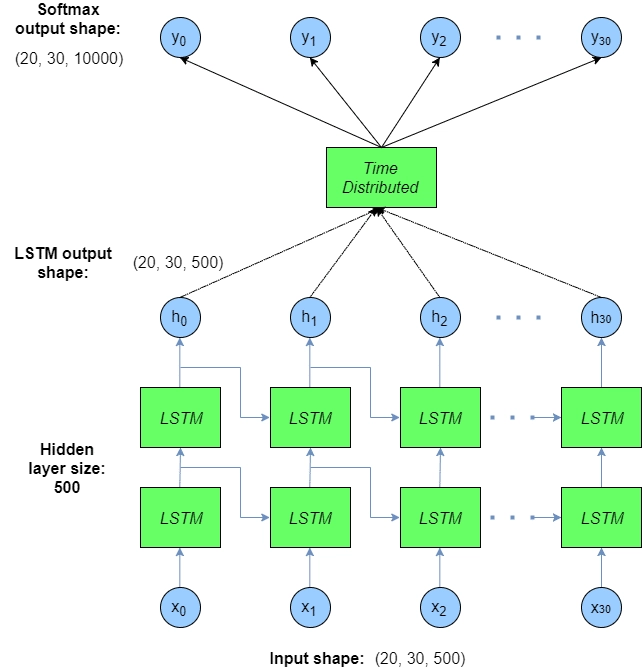
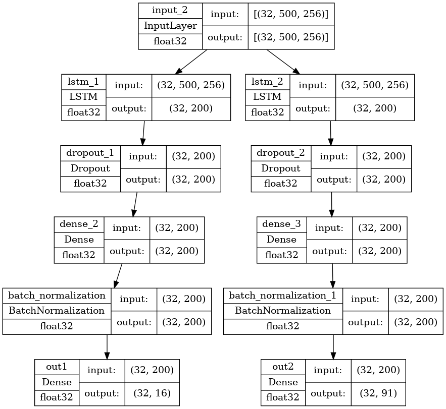
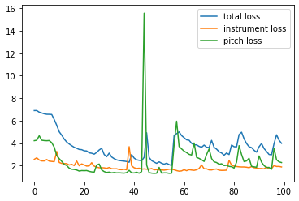
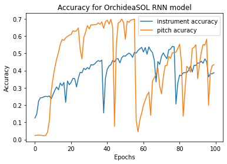
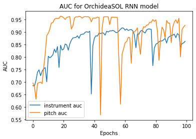
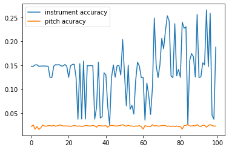
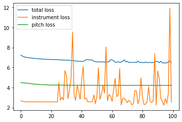
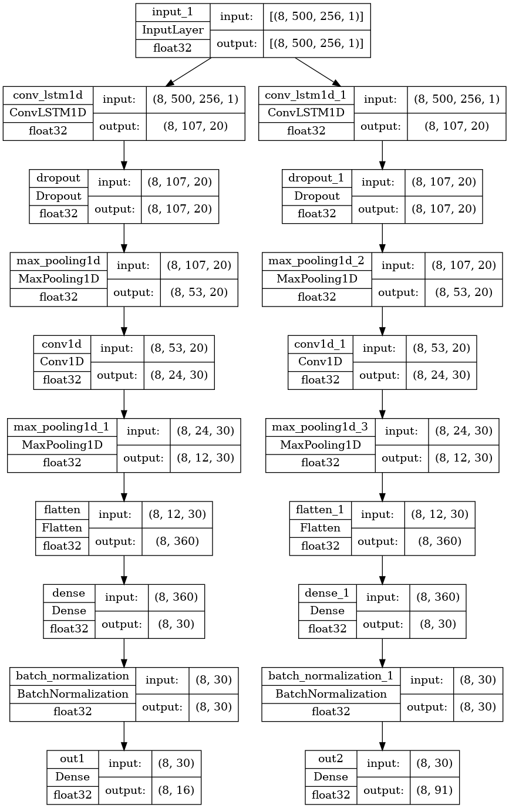

import numpy as np
import pandas as pd
import tensorflow as tf
from keras import Input
from keras import backend as K
from keras import layers, models
from keras.layers import LSTM, Dense
from keras.models import Model, Sequential
import matplotlib.pyplot as plt
from sklearn.model_selection import train_test_split
from sklearn.preprocessing import LabelEncoder, MultiLabelBinarizer
from spec_generator_sequence import spec_generator
from spec_generator_sequence_multilabel import (spec_generator_multi,
spec_generator_multioutput)
from spec_input_generator import gen, gen_eval
from spectrogram_class import spectrogramOrchideaSOL RNN
This is the final notebook working on the Orchidea dataset, preceeding from the music_transcription_2conv.ipynb notebook. In the previous notebook, we have found that:
- Although the loss function of cetegorical cross entropy had been decreasing, our accuracy for predicting the instrument class starts to decrease after the third epoch, for both the training and validating accuracy.
- The training accuracy starts decreasing after the peak of 15%, which is an indicator of either the architecture is unable to capture the feature of the audio files, or the model is optimized wrongly.
Due to the limited time, we have decided to explore the possibility of RNN/LSTM model, instead of trying to optimize CNN model which appear to have unsatisfactory results.
Understanding unrolled LSTM, under 10 seconds!

Image from this fantastic blog.
10…
9…
8…
7…
6…
5…
4…
3…
2…
1…
0…
If you are still here…
Understanding LSTM, under 1 minute!
LSTM, or more generally RNN, is useful to find the relation between sequential data. Instead of having a fixed length of inputs, and trying to learn the weights for each input in a model, RNN uses previous inputs as a predictor for current prediction!
Each RNN cells can have 2 outputs (or 3 for LSMT, more on that later), and the first output will be feed in to the next LSTM cell, undergoes matrix multiplication, and combined with the input of the next sequential timestep. The cycle goes on. The final output will then be fed into the next layer
If the parameter return_sequence of LSTM is set to true, then each LSTM cell will have a second output, to be fed to the next layer, hence we will have a output with the same length along the sequence. This architecture is called an unrolled LSTM.
In this notebook, we will be using the single output version of LSTM, then feeding the output to layers of Dense layers, to classify the instrument and notes of the audio files.
Summary: * LSTM works will flexible length of input data * LSTM uses the previous data as input, transformed using kernel to be learned * LSTM can produce output of same sequence length.
tf.test.is_gpu_available()WARNING:tensorflow:From /tmp/ipykernel_4020/4084812110.py:1: is_gpu_available (from tensorflow.python.framework.test_util) is deprecated and will be removed in a future version.
Instructions for updating:
Use `tf.config.list_physical_devices('GPU')` instead.2022-08-07 18:41:28.718001: I tensorflow/core/platform/cpu_feature_guard.cc:193] This TensorFlow binary is optimized with oneAPI Deep Neural Network Library (oneDNN) to use the following CPU instructions in performance-critical operations: AVX2 FMA
To enable them in other operations, rebuild TensorFlow with the appropriate compiler flags.
2022-08-07 18:41:28.791105: I tensorflow/stream_executor/cuda/cuda_gpu_executor.cc:975] successful NUMA node read from SysFS had negative value (-1), but there must be at least one NUMA node, so returning NUMA node zero
2022-08-07 18:41:28.828697: I tensorflow/stream_executor/cuda/cuda_gpu_executor.cc:975] successful NUMA node read from SysFS had negative value (-1), but there must be at least one NUMA node, so returning NUMA node zero
2022-08-07 18:41:28.829898: I tensorflow/stream_executor/cuda/cuda_gpu_executor.cc:975] successful NUMA node read from SysFS had negative value (-1), but there must be at least one NUMA node, so returning NUMA node zero
2022-08-07 18:41:29.878813: I tensorflow/stream_executor/cuda/cuda_gpu_executor.cc:975] successful NUMA node read from SysFS had negative value (-1), but there must be at least one NUMA node, so returning NUMA node zero
2022-08-07 18:41:29.879839: I tensorflow/stream_executor/cuda/cuda_gpu_executor.cc:975] successful NUMA node read from SysFS had negative value (-1), but there must be at least one NUMA node, so returning NUMA node zero
2022-08-07 18:41:29.880616: I tensorflow/stream_executor/cuda/cuda_gpu_executor.cc:975] successful NUMA node read from SysFS had negative value (-1), but there must be at least one NUMA node, so returning NUMA node zero
2022-08-07 18:41:29.881097: I tensorflow/core/common_runtime/gpu/gpu_device.cc:1532] Created device /device:GPU:0 with 3370 MB memory: -> device: 0, name: NVIDIA GeForce GTX 1050, pci bus id: 0000:01:00.0, compute capability: 6.1Truemeta_df = pd.read_csv('../data/OrchideaSOL_metadata.csv')meta_df.shape(13162, 17)meta_df = meta_df[~meta_df['Pitch ID (if applicable)'].isna()]meta_df.isna().sum()Path 0
Family (abbr.) 0
Family (in full) 0
Instrument (abbr.) 0
Instrument (in full) 0
Technique (abbr.) 0
Technique (in full) 0
Pitch 0
Pitch ID (if applicable) 0
Dynamics 0
Dynamics ID (if applicable) 568
Instance ID 0
Mute (abbr.) 0
Mute (in full) 0
String ID (if applicable) 5666
Needed digital retuning 0
Fold 0
dtype: int64meta_df.shape(13162, 17)meta_df.head(2)| Path | Family (abbr.) | Family (in full) | Instrument (abbr.) | Instrument (in full) | Technique (abbr.) | Technique (in full) | Pitch | Pitch ID (if applicable) | Dynamics | Dynamics ID (if applicable) | Instance ID | Mute (abbr.) | Mute (in full) | String ID (if applicable) | Needed digital retuning | Fold | |
|---|---|---|---|---|---|---|---|---|---|---|---|---|---|---|---|---|---|
| 0 | Brass/Bass_Tuba+sordina/ordinario/BTb+S-ord-A#... | Brass | Brass | BTb | Bass Tuba | ord | ordinario | A#0 | 22.0 | f | 3.0 | 0.0 | S | Sordina | NaN | False | 2 |
| 1 | Brass/Bass_Tuba+sordina/ordinario/BTb+S-ord-A#... | Brass | Brass | BTb | Bass Tuba | ord | ordinario | A#0 | 22.0 | p | 1.0 | 0.0 | S | Sordina | NaN | True | 0 |
As of before, the columns we are interested in (instruments and pitch id) doesn’t have any null vales, we can just perform the train test split and the rest of the preprocessing is taken by our spectrogram class module.
from random import random
train_df, test_df = train_test_split(meta_df, stratify=meta_df['Instrument (in full)'],
train_size=0.7, random_state= 42)multi_generator = spec_generator_multi(train_df, 32)_, num_target = multi_generator.__getitem__(2)[1].shape
print(num_target)107_, num_row, num_col= multi_generator.__getitem__(2)[0].shape
print(num_row)
print(num_col)500
256Rnn two one-hot target
Since we are interested in predicting the instruments and pitchs at the same time, we proposed the following architecture:
- Branching the input into 2 LSTM layers, corresponding to the instruments and notes classificatin.
- Pipe the output in to Dense layer, with dropout and batch normalization
- Pass the output into the classification Dense layer, with the corresponding number of neuron for number of instruments and notes.
BATCH_SIZE = 32
inp = Input((num_row, num_col), batch_size=BATCH_SIZE, )
x = LSTM(200)(inp)
x = layers.Dropout(0.2)(x)
x = layers.Dense(200, activation = 'relu')(x)
x = layers.BatchNormalization()(x)
out1 = layers.Dense(16, activation = 'softmax', name = 'out1')(x)
y = LSTM(200)(inp)
y = layers.Dropout(0.2)(y)
y = layers.Dense(200, activation = 'relu')(y)
y = layers.BatchNormalization()(y)
out2 = layers.Dense(107-16, activation = 'softmax', name = 'out2')(y)
model_2conv_two_out = Model(inp, [out1, out2])tf.keras.utils.plot_model(model_2conv_two_out, show_shapes=True, show_dtype=True)
model_2conv_two_out.summary()Model: "model"
__________________________________________________________________________________________________
Layer (type) Output Shape Param # Connected to
==================================================================================================
input_2 (InputLayer) [(32, 500, 256)] 0 []
lstm_1 (LSTM) (32, 200) 365600 ['input_2[0][0]']
lstm_2 (LSTM) (32, 200) 365600 ['input_2[0][0]']
dropout_1 (Dropout) (32, 200) 0 ['lstm_1[0][0]']
dropout_2 (Dropout) (32, 200) 0 ['lstm_2[0][0]']
dense_2 (Dense) (32, 200) 40200 ['dropout_1[0][0]']
dense_3 (Dense) (32, 200) 40200 ['dropout_2[0][0]']
batch_normalization (BatchNorm (32, 200) 800 ['dense_2[0][0]']
alization)
batch_normalization_1 (BatchNo (32, 200) 800 ['dense_3[0][0]']
rmalization)
out1 (Dense) (32, 16) 3216 ['batch_normalization[0][0]']
out2 (Dense) (32, 91) 18291 ['batch_normalization_1[0][0]']
==================================================================================================
Total params: 834,707
Trainable params: 833,907
Non-trainable params: 800
__________________________________________________________________________________________________model_2conv_two_out.compile(optimizer=tf.keras.optimizers.Adam(learning_rate=0.005),
loss={'out1': tf.keras.losses.CategoricalCrossentropy(),
'out2': tf.keras.losses.CategoricalCrossentropy()},
metrics=['accuracy', tf.keras.metrics.AUC()])Since for each output layer, we are tryng to predict the one hot encoded instrument and note classes, we will be using categorical cross entropy here.
Also, we will be using the AUC to gauge how well the model is performing.
multioutput_generator = spec_generator_multioutput(train_df, 32)
multioutput_test_generator = spec_generator_multioutput(test_df, 32)multioutput_generator.__getitem__(32)[0].shape(32, 500, 256)# model_2conv_two_out = models.load_model('../models/rnn/first/')# from datetime import datetime
# ckpt_callback = tf.keras.callbacks.ModelCheckpoint(
# f"../models/baseline_checkpoint/{datetime.now().strftime('%Y%m%d_%H%M%S')}_{{epoch:02d}}_rnn_multioutput",
# monitor='val_accuracy',
# save_freq = 287*5)
# early_callback = tf.keras.callbacks.EarlyStopping(monitor = 'val_loss', patience = 2)
# history = model_2conv_two_out.fit(multioutput_generator, epochs=100,
# validation_data= multioutput_test_generator,
# callbacks=[ckpt_callback])Epoch 1/1002022-07-27 21:47:41.128381: I tensorflow/stream_executor/cuda/cuda_dnn.cc:384] Loaded cuDNN version 8100287/287 [==============================] - 53s 168ms/step - loss: 7.2355 - out1_loss: 2.7267 - out2_loss: 4.5088 - out1_accuracy: 0.1138 - out1_auc: 0.6068 - out2_accuracy: 0.0142 - out2_auc: 0.5101 - val_loss: 7.1677 - val_out1_loss: 2.6802 - val_out2_loss: 4.4875 - val_out1_accuracy: 0.1479 - val_out1_auc: 0.6766 - val_out2_accuracy: 0.0218 - val_out2_auc: 0.5000
Epoch 2/100
287/287 [==============================] - 53s 184ms/step - loss: 7.1360 - out1_loss: 2.6474 - out2_loss: 4.4886 - out1_accuracy: 0.1433 - out1_auc: 0.6693 - out2_accuracy: 0.0167 - out2_auc: 0.5433 - val_loss: 7.0866 - val_out1_loss: 2.6193 - val_out2_loss: 4.4673 - val_out1_accuracy: 0.1476 - val_out1_auc: 0.6774 - val_out2_accuracy: 0.0252 - val_out2_auc: 0.5751
Epoch 3/100
287/287 [==============================] - 64s 222ms/step - loss: 7.0720 - out1_loss: 2.6014 - out2_loss: 4.4706 - out1_accuracy: 0.1490 - out1_auc: 0.6795 - out2_accuracy: 0.0185 - out2_auc: 0.5672 - val_loss: 7.0404 - val_out1_loss: 2.5783 - val_out2_loss: 4.4621 - val_out1_accuracy: 0.1507 - val_out1_auc: 0.6807 - val_out2_accuracy: 0.0163 - val_out2_auc: 0.5569
Epoch 4/100
287/287 [==============================] - 51s 177ms/step - loss: 7.0296 - out1_loss: 2.5796 - out2_loss: 4.4500 - out1_accuracy: 0.1437 - out1_auc: 0.6808 - out2_accuracy: 0.0222 - out2_auc: 0.5914 - val_loss: 7.0381 - val_out1_loss: 2.5947 - val_out2_loss: 4.4434 - val_out1_accuracy: 0.1509 - val_out1_auc: 0.6818 - val_out2_accuracy: 0.0218 - val_out2_auc: 0.5818
Epoch 5/100
286/287 [============================>.] - ETA: 0s - loss: 7.0014 - out1_loss: 2.5690 - out2_loss: 4.4324 - out1_accuracy: 0.1453 - out1_auc: 0.6804 - out2_accuracy: 0.0205 - out2_auc: 0.6114WARNING:absl:Found untraced functions such as lstm_cell_1_layer_call_fn, lstm_cell_1_layer_call_and_return_conditional_losses, lstm_cell_2_layer_call_fn, lstm_cell_2_layer_call_and_return_conditional_losses while saving (showing 4 of 4). These functions will not be directly callable after loading.INFO:tensorflow:Assets written to: ../models/baseline_checkpoint/20220727_214736_05_rnn_multioutput/assetsINFO:tensorflow:Assets written to: ../models/baseline_checkpoint/20220727_214736_05_rnn_multioutput/assets287/287 [==============================] - 73s 253ms/step - loss: 7.0016 - out1_loss: 2.5692 - out2_loss: 4.4324 - out1_accuracy: 0.1453 - out1_auc: 0.6803 - out2_accuracy: 0.0206 - out2_auc: 0.6112 - val_loss: 6.9861 - val_out1_loss: 2.5600 - val_out2_loss: 4.4261 - val_out1_accuracy: 0.1479 - val_out1_auc: 0.6860 - val_out2_accuracy: 0.0158 - val_out2_auc: 0.6169
Epoch 6/100
287/287 [==============================] - 53s 184ms/step - loss: 6.9760 - out1_loss: 2.5597 - out2_loss: 4.4163 - out1_accuracy: 0.1504 - out1_auc: 0.6867 - out2_accuracy: 0.0225 - out2_auc: 0.6296 - val_loss: 6.9823 - val_out1_loss: 2.5623 - val_out2_loss: 4.4201 - val_out1_accuracy: 0.1481 - val_out1_auc: 0.6860 - val_out2_accuracy: 0.0188 - val_out2_auc: 0.6229
Epoch 7/100
287/287 [==============================] - 57s 198ms/step - loss: 6.9596 - out1_loss: 2.5593 - out2_loss: 4.4004 - out1_accuracy: 0.1493 - out1_auc: 0.6858 - out2_accuracy: 0.0212 - out2_auc: 0.6420 - val_loss: 6.9600 - val_out1_loss: 2.5730 - val_out2_loss: 4.3870 - val_out1_accuracy: 0.1484 - val_out1_auc: 0.6783 - val_out2_accuracy: 0.0246 - val_out2_auc: 0.6321
Epoch 8/100
287/287 [==============================] - 55s 191ms/step - loss: 6.9373 - out1_loss: 2.5559 - out2_loss: 4.3814 - out1_accuracy: 0.1547 - out1_auc: 0.6874 - out2_accuracy: 0.0253 - out2_auc: 0.6541 - val_loss: 6.9443 - val_out1_loss: 2.5639 - val_out2_loss: 4.3805 - val_out1_accuracy: 0.1484 - val_out1_auc: 0.6879 - val_out2_accuracy: 0.0229 - val_out2_auc: 0.6529
Epoch 9/100
287/287 [==============================] - 67s 234ms/step - loss: 6.9217 - out1_loss: 2.5551 - out2_loss: 4.3666 - out1_accuracy: 0.1516 - out1_auc: 0.6883 - out2_accuracy: 0.0206 - out2_auc: 0.6589 - val_loss: 6.9132 - val_out1_loss: 2.5705 - val_out2_loss: 4.3427 - val_out1_accuracy: 0.1481 - val_out1_auc: 0.6818 - val_out2_accuracy: 0.0224 - val_out2_auc: 0.6776
Epoch 10/100
286/287 [============================>.] - ETA: 0s - loss: 6.9061 - out1_loss: 2.5563 - out2_loss: 4.3498 - out1_accuracy: 0.1452 - out1_auc: 0.6876 - out2_accuracy: 0.0257 - out2_auc: 0.6683WARNING:absl:Found untraced functions such as lstm_cell_1_layer_call_fn, lstm_cell_1_layer_call_and_return_conditional_losses, lstm_cell_2_layer_call_fn, lstm_cell_2_layer_call_and_return_conditional_losses while saving (showing 4 of 4). These functions will not be directly callable after loading.INFO:tensorflow:Assets written to: ../models/baseline_checkpoint/20220727_214736_10_rnn_multioutput/assetsINFO:tensorflow:Assets written to: ../models/baseline_checkpoint/20220727_214736_10_rnn_multioutput/assets287/287 [==============================] - 80s 278ms/step - loss: 6.9064 - out1_loss: 2.5564 - out2_loss: 4.3500 - out1_accuracy: 0.1454 - out1_auc: 0.6875 - out2_accuracy: 0.0257 - out2_auc: 0.6681 - val_loss: 6.8961 - val_out1_loss: 2.5614 - val_out2_loss: 4.3347 - val_out1_accuracy: 0.1479 - val_out1_auc: 0.6852 - val_out2_accuracy: 0.0236 - val_out2_auc: 0.6722
Epoch 11/100
287/287 [==============================] - 52s 182ms/step - loss: 6.8898 - out1_loss: 2.5540 - out2_loss: 4.3358 - out1_accuracy: 0.1519 - out1_auc: 0.6889 - out2_accuracy: 0.0235 - out2_auc: 0.6711 - val_loss: 6.8875 - val_out1_loss: 2.5650 - val_out2_loss: 4.3226 - val_out1_accuracy: 0.1245 - val_out1_auc: 0.6843 - val_out2_accuracy: 0.0236 - val_out2_auc: 0.6788
Epoch 12/100
287/287 [==============================] - 62s 214ms/step - loss: 6.8777 - out1_loss: 2.5543 - out2_loss: 4.3234 - out1_accuracy: 0.1515 - out1_auc: 0.6885 - out2_accuracy: 0.0235 - out2_auc: 0.6752 - val_loss: 6.8789 - val_out1_loss: 2.5701 - val_out2_loss: 4.3088 - val_out1_accuracy: 0.1245 - val_out1_auc: 0.6794 - val_out2_accuracy: 0.0229 - val_out2_auc: 0.6773
Epoch 13/100
287/287 [==============================] - 59s 206ms/step - loss: 6.8617 - out1_loss: 2.5526 - out2_loss: 4.3091 - out1_accuracy: 0.1488 - out1_auc: 0.6905 - out2_accuracy: 0.0237 - out2_auc: 0.6780 - val_loss: 6.8715 - val_out1_loss: 2.5617 - val_out2_loss: 4.3098 - val_out1_accuracy: 0.1481 - val_out1_auc: 0.6888 - val_out2_accuracy: 0.0241 - val_out2_auc: 0.6770
Epoch 14/100
287/287 [==============================] - 60s 208ms/step - loss: 6.8507 - out1_loss: 2.5524 - out2_loss: 4.2983 - out1_accuracy: 0.1519 - out1_auc: 0.6900 - out2_accuracy: 0.0237 - out2_auc: 0.6813 - val_loss: 6.8602 - val_out1_loss: 2.5603 - val_out2_loss: 4.2998 - val_out1_accuracy: 0.1512 - val_out1_auc: 0.6884 - val_out2_accuracy: 0.0224 - val_out2_auc: 0.6799
Epoch 15/100
286/287 [============================>.] - ETA: 0s - loss: 6.8418 - out1_loss: 2.5534 - out2_loss: 4.2884 - out1_accuracy: 0.1496 - out1_auc: 0.6889 - out2_accuracy: 0.0255 - out2_auc: 0.6847WARNING:absl:Found untraced functions such as lstm_cell_1_layer_call_fn, lstm_cell_1_layer_call_and_return_conditional_losses, lstm_cell_2_layer_call_fn, lstm_cell_2_layer_call_and_return_conditional_losses while saving (showing 4 of 4). These functions will not be directly callable after loading.INFO:tensorflow:Assets written to: ../models/baseline_checkpoint/20220727_214736_15_rnn_multioutput/assetsINFO:tensorflow:Assets written to: ../models/baseline_checkpoint/20220727_214736_15_rnn_multioutput/assets287/287 [==============================] - 105s 364ms/step - loss: 6.8416 - out1_loss: 2.5531 - out2_loss: 4.2885 - out1_accuracy: 0.1498 - out1_auc: 0.6890 - out2_accuracy: 0.0254 - out2_auc: 0.6847 - val_loss: 6.8455 - val_out1_loss: 2.5634 - val_out2_loss: 4.2821 - val_out1_accuracy: 0.1507 - val_out1_auc: 0.6833 - val_out2_accuracy: 0.0231 - val_out2_auc: 0.6883
Epoch 16/100
287/287 [==============================] - 77s 267ms/step - loss: 6.8301 - out1_loss: 2.5524 - out2_loss: 4.2778 - out1_accuracy: 0.1481 - out1_auc: 0.6908 - out2_accuracy: 0.0246 - out2_auc: 0.6890 - val_loss: 6.8404 - val_out1_loss: 2.5629 - val_out2_loss: 4.2775 - val_out1_accuracy: 0.1512 - val_out1_auc: 0.6884 - val_out2_accuracy: 0.0249 - val_out2_auc: 0.6874
Epoch 17/100
287/287 [==============================] - 61s 212ms/step - loss: 6.8226 - out1_loss: 2.5519 - out2_loss: 4.2708 - out1_accuracy: 0.1504 - out1_auc: 0.6900 - out2_accuracy: 0.0250 - out2_auc: 0.6918 - val_loss: 6.8364 - val_out1_loss: 2.5631 - val_out2_loss: 4.2734 - val_out1_accuracy: 0.1484 - val_out1_auc: 0.6842 - val_out2_accuracy: 0.0241 - val_out2_auc: 0.6930
Epoch 18/100
287/287 [==============================] - 55s 191ms/step - loss: 6.8173 - out1_loss: 2.5523 - out2_loss: 4.2650 - out1_accuracy: 0.1510 - out1_auc: 0.6898 - out2_accuracy: 0.0243 - out2_auc: 0.6933 - val_loss: 6.8269 - val_out1_loss: 2.5562 - val_out2_loss: 4.2706 - val_out1_accuracy: 0.1486 - val_out1_auc: 0.6887 - val_out2_accuracy: 0.0229 - val_out2_auc: 0.6879
Epoch 19/100
287/287 [==============================] - 60s 209ms/step - loss: 6.8092 - out1_loss: 2.5520 - out2_loss: 4.2572 - out1_accuracy: 0.1517 - out1_auc: 0.6901 - out2_accuracy: 0.0257 - out2_auc: 0.6960 - val_loss: 6.8209 - val_out1_loss: 2.5710 - val_out2_loss: 4.2499 - val_out1_accuracy: 0.1514 - val_out1_auc: 0.6830 - val_out2_accuracy: 0.0229 - val_out2_auc: 0.6967
Epoch 20/100
286/287 [============================>.] - ETA: 0s - loss: 6.8056 - out1_loss: 2.5520 - out2_loss: 4.2536 - out1_accuracy: 0.1483 - out1_auc: 0.6902 - out2_accuracy: 0.0268 - out2_auc: 0.6972WARNING:absl:Found untraced functions such as lstm_cell_1_layer_call_fn, lstm_cell_1_layer_call_and_return_conditional_losses, lstm_cell_2_layer_call_fn, lstm_cell_2_layer_call_and_return_conditional_losses while saving (showing 4 of 4). These functions will not be directly callable after loading.INFO:tensorflow:Assets written to: ../models/baseline_checkpoint/20220727_214736_20_rnn_multioutput/assetsINFO:tensorflow:Assets written to: ../models/baseline_checkpoint/20220727_214736_20_rnn_multioutput/assets287/287 [==============================] - 82s 286ms/step - loss: 6.8056 - out1_loss: 2.5520 - out2_loss: 4.2536 - out1_accuracy: 0.1485 - out1_auc: 0.6901 - out2_accuracy: 0.0268 - out2_auc: 0.6972 - val_loss: 6.8144 - val_out1_loss: 2.5645 - val_out2_loss: 4.2499 - val_out1_accuracy: 0.1481 - val_out1_auc: 0.6849 - val_out2_accuracy: 0.0229 - val_out2_auc: 0.6962
Epoch 21/100
287/287 [==============================] - 51s 178ms/step - loss: 6.7995 - out1_loss: 2.5517 - out2_loss: 4.2478 - out1_accuracy: 0.1499 - out1_auc: 0.6898 - out2_accuracy: 0.0257 - out2_auc: 0.6980 - val_loss: 6.8098 - val_out1_loss: 2.5624 - val_out2_loss: 4.2474 - val_out1_accuracy: 0.1245 - val_out1_auc: 0.6819 - val_out2_accuracy: 0.0229 - val_out2_auc: 0.6948
Epoch 22/100
287/287 [==============================] - 60s 210ms/step - loss: 6.7971 - out1_loss: 2.5524 - out2_loss: 4.2447 - out1_accuracy: 0.1462 - out1_auc: 0.6898 - out2_accuracy: 0.0249 - out2_auc: 0.6972 - val_loss: 6.8041 - val_out1_loss: 2.5586 - val_out2_loss: 4.2455 - val_out1_accuracy: 0.1486 - val_out1_auc: 0.6891 - val_out2_accuracy: 0.0218 - val_out2_auc: 0.6983
Epoch 23/100
287/287 [==============================] - 64s 223ms/step - loss: 6.7894 - out1_loss: 2.5499 - out2_loss: 4.2395 - out1_accuracy: 0.1470 - out1_auc: 0.6903 - out2_accuracy: 0.0245 - out2_auc: 0.6993 - val_loss: 6.7994 - val_out1_loss: 2.5558 - val_out2_loss: 4.2435 - val_out1_accuracy: 0.1517 - val_out1_auc: 0.6906 - val_out2_accuracy: 0.0229 - val_out2_auc: 0.6959
Epoch 24/100
287/287 [==============================] - 55s 190ms/step - loss: 6.7886 - out1_loss: 2.5496 - out2_loss: 4.2390 - out1_accuracy: 0.1519 - out1_auc: 0.6905 - out2_accuracy: 0.0246 - out2_auc: 0.6975 - val_loss: 6.8007 - val_out1_loss: 2.5592 - val_out2_loss: 4.2414 - val_out1_accuracy: 0.1519 - val_out1_auc: 0.6906 - val_out2_accuracy: 0.0239 - val_out2_auc: 0.6974
Epoch 25/100
286/287 [============================>.] - ETA: 0s - loss: 6.7807 - out1_loss: 2.5462 - out2_loss: 4.2345 - out1_accuracy: 0.1478 - out1_auc: 0.6921 - out2_accuracy: 0.0260 - out2_auc: 0.6987WARNING:absl:Found untraced functions such as lstm_cell_1_layer_call_fn, lstm_cell_1_layer_call_and_return_conditional_losses, lstm_cell_2_layer_call_fn, lstm_cell_2_layer_call_and_return_conditional_losses while saving (showing 4 of 4). These functions will not be directly callable after loading.INFO:tensorflow:Assets written to: ../models/baseline_checkpoint/20220727_214736_25_rnn_multioutput/assetsINFO:tensorflow:Assets written to: ../models/baseline_checkpoint/20220727_214736_25_rnn_multioutput/assets287/287 [==============================] - 97s 338ms/step - loss: 6.7809 - out1_loss: 2.5463 - out2_loss: 4.2346 - out1_accuracy: 0.1478 - out1_auc: 0.6919 - out2_accuracy: 0.0261 - out2_auc: 0.6987 - val_loss: 6.8006 - val_out1_loss: 2.5598 - val_out2_loss: 4.2408 - val_out1_accuracy: 0.1242 - val_out1_auc: 0.6879 - val_out2_accuracy: 0.0229 - val_out2_auc: 0.6963
Epoch 26/100
287/287 [==============================] - 57s 200ms/step - loss: 6.7698 - out1_loss: 2.5365 - out2_loss: 4.2333 - out1_accuracy: 0.1505 - out1_auc: 0.6950 - out2_accuracy: 0.0229 - out2_auc: 0.6985 - val_loss: 8.7131 - val_out1_loss: 4.4687 - val_out2_loss: 4.2444 - val_out1_accuracy: 0.0371 - val_out1_auc: 0.6212 - val_out2_accuracy: 0.0226 - val_out2_auc: 0.6982
Epoch 27/100
287/287 [==============================] - 61s 214ms/step - loss: 6.7541 - out1_loss: 2.5244 - out2_loss: 4.2297 - out1_accuracy: 0.1644 - out1_auc: 0.7013 - out2_accuracy: 0.0249 - out2_auc: 0.6993 - val_loss: 6.9577 - val_out1_loss: 2.7265 - val_out2_loss: 4.2312 - val_out1_accuracy: 0.1532 - val_out1_auc: 0.6918 - val_out2_accuracy: 0.0229 - val_out2_auc: 0.6988
Epoch 28/100
287/287 [==============================] - 65s 227ms/step - loss: 6.7542 - out1_loss: 2.5253 - out2_loss: 4.2289 - out1_accuracy: 0.1690 - out1_auc: 0.7018 - out2_accuracy: 0.0235 - out2_auc: 0.6991 - val_loss: 7.2423 - val_out1_loss: 3.0077 - val_out2_loss: 4.2346 - val_out1_accuracy: 0.0373 - val_out1_auc: 0.6022 - val_out2_accuracy: 0.0216 - val_out2_auc: 0.6959
Epoch 29/100
287/287 [==============================] - 74s 257ms/step - loss: 6.7435 - out1_loss: 2.5184 - out2_loss: 4.2251 - out1_accuracy: 0.1628 - out1_auc: 0.7049 - out2_accuracy: 0.0272 - out2_auc: 0.7003 - val_loss: 7.0012 - val_out1_loss: 2.7730 - val_out2_loss: 4.2281 - val_out1_accuracy: 0.1588 - val_out1_auc: 0.6774 - val_out2_accuracy: 0.0229 - val_out2_auc: 0.6991
Epoch 30/100
286/287 [============================>.] - ETA: 0s - loss: 6.7363 - out1_loss: 2.5121 - out2_loss: 4.2242 - out1_accuracy: 0.1705 - out1_auc: 0.7090 - out2_accuracy: 0.0237 - out2_auc: 0.7001WARNING:absl:Found untraced functions such as lstm_cell_1_layer_call_fn, lstm_cell_1_layer_call_and_return_conditional_losses, lstm_cell_2_layer_call_fn, lstm_cell_2_layer_call_and_return_conditional_losses while saving (showing 4 of 4). These functions will not be directly callable after loading.INFO:tensorflow:Assets written to: ../models/baseline_checkpoint/20220727_214736_30_rnn_multioutput/assetsINFO:tensorflow:Assets written to: ../models/baseline_checkpoint/20220727_214736_30_rnn_multioutput/assets287/287 [==============================] - 83s 289ms/step - loss: 6.7360 - out1_loss: 2.5117 - out2_loss: 4.2243 - out1_accuracy: 0.1705 - out1_auc: 0.7091 - out2_accuracy: 0.0236 - out2_auc: 0.7001 - val_loss: 9.9162 - val_out1_loss: 5.6891 - val_out2_loss: 4.2270 - val_out1_accuracy: 0.0373 - val_out1_auc: 0.5545 - val_out2_accuracy: 0.0236 - val_out2_auc: 0.6994
Epoch 31/100
287/287 [==============================] - 60s 208ms/step - loss: 6.7247 - out1_loss: 2.5005 - out2_loss: 4.2242 - out1_accuracy: 0.1768 - out1_auc: 0.7142 - out2_accuracy: 0.0257 - out2_auc: 0.6993 - val_loss: 9.4025 - val_out1_loss: 5.1772 - val_out2_loss: 4.2253 - val_out1_accuracy: 0.1494 - val_out1_auc: 0.5105 - val_out2_accuracy: 0.0236 - val_out2_auc: 0.6966
Epoch 32/100
287/287 [==============================] - 64s 221ms/step - loss: 6.7354 - out1_loss: 2.5141 - out2_loss: 4.2213 - out1_accuracy: 0.1753 - out1_auc: 0.7096 - out2_accuracy: 0.0226 - out2_auc: 0.6997 - val_loss: 7.1309 - val_out1_loss: 2.8997 - val_out2_loss: 4.2312 - val_out1_accuracy: 0.1489 - val_out1_auc: 0.5597 - val_out2_accuracy: 0.0229 - val_out2_auc: 0.6972
Epoch 33/100
287/287 [==============================] - 64s 222ms/step - loss: 6.7139 - out1_loss: 2.4923 - out2_loss: 4.2217 - out1_accuracy: 0.1800 - out1_auc: 0.7188 - out2_accuracy: 0.0248 - out2_auc: 0.6989 - val_loss: 7.9635 - val_out1_loss: 3.7374 - val_out2_loss: 4.2260 - val_out1_accuracy: 0.1494 - val_out1_auc: 0.5066 - val_out2_accuracy: 0.0229 - val_out2_auc: 0.6976
Epoch 34/100
287/287 [==============================] - 69s 240ms/step - loss: 6.7050 - out1_loss: 2.4841 - out2_loss: 4.2209 - out1_accuracy: 0.1794 - out1_auc: 0.7225 - out2_accuracy: 0.0223 - out2_auc: 0.6984 - val_loss: 9.1518 - val_out1_loss: 4.9268 - val_out2_loss: 4.2250 - val_out1_accuracy: 0.1489 - val_out1_auc: 0.4688 - val_out2_accuracy: 0.0241 - val_out2_auc: 0.6994
Epoch 35/100
286/287 [============================>.] - ETA: 0s - loss: 6.6880 - out1_loss: 2.4689 - out2_loss: 4.2192 - out1_accuracy: 0.1864 - out1_auc: 0.7278 - out2_accuracy: 0.0231 - out2_auc: 0.7002WARNING:absl:Found untraced functions such as lstm_cell_1_layer_call_fn, lstm_cell_1_layer_call_and_return_conditional_losses, lstm_cell_2_layer_call_fn, lstm_cell_2_layer_call_and_return_conditional_losses while saving (showing 4 of 4). These functions will not be directly callable after loading.INFO:tensorflow:Assets written to: ../models/baseline_checkpoint/20220727_214736_35_rnn_multioutput/assetsINFO:tensorflow:Assets written to: ../models/baseline_checkpoint/20220727_214736_35_rnn_multioutput/assets287/287 [==============================] - 82s 282ms/step - loss: 6.6892 - out1_loss: 2.4700 - out2_loss: 4.2192 - out1_accuracy: 0.1864 - out1_auc: 0.7274 - out2_accuracy: 0.0231 - out2_auc: 0.7002 - val_loss: 13.7810 - val_out1_loss: 9.5534 - val_out2_loss: 4.2276 - val_out1_accuracy: 0.0373 - val_out1_auc: 0.4940 - val_out2_accuracy: 0.0231 - val_out2_auc: 0.6976
Epoch 36/100
287/287 [==============================] - 66s 231ms/step - loss: 6.6736 - out1_loss: 2.4554 - out2_loss: 4.2181 - out1_accuracy: 0.1901 - out1_auc: 0.7317 - out2_accuracy: 0.0237 - out2_auc: 0.6994 - val_loss: 7.4920 - val_out1_loss: 3.2654 - val_out2_loss: 4.2267 - val_out1_accuracy: 0.0617 - val_out1_auc: 0.5160 - val_out2_accuracy: 0.0203 - val_out2_auc: 0.6982
Epoch 37/100
287/287 [==============================] - 65s 226ms/step - loss: 6.6448 - out1_loss: 2.4282 - out2_loss: 4.2166 - out1_accuracy: 0.1960 - out1_auc: 0.7409 - out2_accuracy: 0.0265 - out2_auc: 0.6993 - val_loss: 6.9364 - val_out1_loss: 2.7149 - val_out2_loss: 4.2215 - val_out1_accuracy: 0.1565 - val_out1_auc: 0.6380 - val_out2_accuracy: 0.0239 - val_out2_auc: 0.6986
Epoch 38/100
287/287 [==============================] - 61s 213ms/step - loss: 6.6333 - out1_loss: 2.4159 - out2_loss: 4.2173 - out1_accuracy: 0.1980 - out1_auc: 0.7442 - out2_accuracy: 0.0246 - out2_auc: 0.6983 - val_loss: 8.4062 - val_out1_loss: 4.1868 - val_out2_loss: 4.2194 - val_out1_accuracy: 0.0396 - val_out1_auc: 0.4280 - val_out2_accuracy: 0.0234 - val_out2_auc: 0.6994
Epoch 39/100
287/287 [==============================] - 66s 228ms/step - loss: 6.6223 - out1_loss: 2.4077 - out2_loss: 4.2146 - out1_accuracy: 0.1992 - out1_auc: 0.7471 - out2_accuracy: 0.0244 - out2_auc: 0.6990 - val_loss: 7.8669 - val_out1_loss: 3.6443 - val_out2_loss: 4.2226 - val_out1_accuracy: 0.0424 - val_out1_auc: 0.4529 - val_out2_accuracy: 0.0229 - val_out2_auc: 0.6991
Epoch 40/100
286/287 [============================>.] - ETA: 0s - loss: 6.6335 - out1_loss: 2.4192 - out2_loss: 4.2144 - out1_accuracy: 0.2002 - out1_auc: 0.7439 - out2_accuracy: 0.0282 - out2_auc: 0.6997WARNING:absl:Found untraced functions such as lstm_cell_1_layer_call_fn, lstm_cell_1_layer_call_and_return_conditional_losses, lstm_cell_2_layer_call_fn, lstm_cell_2_layer_call_and_return_conditional_losses while saving (showing 4 of 4). These functions will not be directly callable after loading.INFO:tensorflow:Assets written to: ../models/baseline_checkpoint/20220727_214736_40_rnn_multioutput/assetsINFO:tensorflow:Assets written to: ../models/baseline_checkpoint/20220727_214736_40_rnn_multioutput/assets287/287 [==============================] - 69s 240ms/step - loss: 6.6327 - out1_loss: 2.4185 - out2_loss: 4.2143 - out1_accuracy: 0.2002 - out1_auc: 0.7442 - out2_accuracy: 0.0283 - out2_auc: 0.6997 - val_loss: 7.0274 - val_out1_loss: 2.8029 - val_out2_loss: 4.2245 - val_out1_accuracy: 0.1341 - val_out1_auc: 0.6977 - val_out2_accuracy: 0.0229 - val_out2_auc: 0.6974
Epoch 41/100
287/287 [==============================] - 50s 175ms/step - loss: 6.6100 - out1_loss: 2.3950 - out2_loss: 4.2150 - out1_accuracy: 0.2022 - out1_auc: 0.7519 - out2_accuracy: 0.0248 - out2_auc: 0.6994 - val_loss: 9.0041 - val_out1_loss: 4.7863 - val_out2_loss: 4.2178 - val_out1_accuracy: 0.1296 - val_out1_auc: 0.5840 - val_out2_accuracy: 0.0236 - val_out2_auc: 0.6983
Epoch 42/100
287/287 [==============================] - 51s 177ms/step - loss: 6.6122 - out1_loss: 2.3989 - out2_loss: 4.2133 - out1_accuracy: 0.1999 - out1_auc: 0.7502 - out2_accuracy: 0.0257 - out2_auc: 0.7001 - val_loss: 10.3175 - val_out1_loss: 6.1007 - val_out2_loss: 4.2168 - val_out1_accuracy: 0.0638 - val_out1_auc: 0.5302 - val_out2_accuracy: 0.0203 - val_out2_auc: 0.6989
Epoch 43/100
287/287 [==============================] - 57s 198ms/step - loss: 6.6884 - out1_loss: 2.4744 - out2_loss: 4.2139 - out1_accuracy: 0.1880 - out1_auc: 0.7279 - out2_accuracy: 0.0240 - out2_auc: 0.6988 - val_loss: 7.0678 - val_out1_loss: 2.8507 - val_out2_loss: 4.2171 - val_out1_accuracy: 0.0254 - val_out1_auc: 0.5688 - val_out2_accuracy: 0.0236 - val_out2_auc: 0.7010
Epoch 44/100
287/287 [==============================] - 55s 192ms/step - loss: 6.7897 - out1_loss: 2.5766 - out2_loss: 4.2131 - out1_accuracy: 0.1500 - out1_auc: 0.6852 - out2_accuracy: 0.0219 - out2_auc: 0.6978 - val_loss: 7.1600 - val_out1_loss: 2.9386 - val_out2_loss: 4.2215 - val_out1_accuracy: 0.1237 - val_out1_auc: 0.6638 - val_out2_accuracy: 0.0239 - val_out2_auc: 0.6954
Epoch 45/100
286/287 [============================>.] - ETA: 0s - loss: 6.7673 - out1_loss: 2.5557 - out2_loss: 4.2116 - out1_accuracy: 0.1532 - out1_auc: 0.6907 - out2_accuracy: 0.0244 - out2_auc: 0.7003WARNING:absl:Found untraced functions such as lstm_cell_1_layer_call_fn, lstm_cell_1_layer_call_and_return_conditional_losses, lstm_cell_2_layer_call_fn, lstm_cell_2_layer_call_and_return_conditional_losses while saving (showing 4 of 4). These functions will not be directly callable after loading.INFO:tensorflow:Assets written to: ../models/baseline_checkpoint/20220727_214736_45_rnn_multioutput/assetsINFO:tensorflow:Assets written to: ../models/baseline_checkpoint/20220727_214736_45_rnn_multioutput/assets287/287 [==============================] - 70s 243ms/step - loss: 6.7673 - out1_loss: 2.5559 - out2_loss: 4.2114 - out1_accuracy: 0.1533 - out1_auc: 0.6906 - out2_accuracy: 0.0245 - out2_auc: 0.7003 - val_loss: 6.7758 - val_out1_loss: 2.5579 - val_out2_loss: 4.2179 - val_out1_accuracy: 0.1507 - val_out1_auc: 0.6894 - val_out2_accuracy: 0.0239 - val_out2_auc: 0.6987
Epoch 46/100
287/287 [==============================] - 49s 169ms/step - loss: 6.7636 - out1_loss: 2.5524 - out2_loss: 4.2111 - out1_accuracy: 0.1505 - out1_auc: 0.6910 - out2_accuracy: 0.0248 - out2_auc: 0.6999 - val_loss: 6.7975 - val_out1_loss: 2.5822 - val_out2_loss: 4.2153 - val_out1_accuracy: 0.1250 - val_out1_auc: 0.6790 - val_out2_accuracy: 0.0229 - val_out2_auc: 0.6989
Epoch 47/100
287/287 [==============================] - 53s 183ms/step - loss: 6.7585 - out1_loss: 2.5479 - out2_loss: 4.2106 - out1_accuracy: 0.1475 - out1_auc: 0.6928 - out2_accuracy: 0.0249 - out2_auc: 0.6993 - val_loss: 6.7690 - val_out1_loss: 2.5520 - val_out2_loss: 4.2171 - val_out1_accuracy: 0.1486 - val_out1_auc: 0.6917 - val_out2_accuracy: 0.0229 - val_out2_auc: 0.7016
Epoch 48/100
287/287 [==============================] - 54s 187ms/step - loss: 6.7542 - out1_loss: 2.5431 - out2_loss: 4.2111 - out1_accuracy: 0.1555 - out1_auc: 0.6947 - out2_accuracy: 0.0255 - out2_auc: 0.7000 - val_loss: 6.8181 - val_out1_loss: 2.6016 - val_out2_loss: 4.2165 - val_out1_accuracy: 0.1496 - val_out1_auc: 0.6892 - val_out2_accuracy: 0.0236 - val_out2_auc: 0.6978
Epoch 49/100
287/287 [==============================] - 56s 196ms/step - loss: 6.6150 - out1_loss: 2.4045 - out2_loss: 4.2105 - out1_accuracy: 0.1964 - out1_auc: 0.7485 - out2_accuracy: 0.0217 - out2_auc: 0.6989 - val_loss: 7.4761 - val_out1_loss: 3.2580 - val_out2_loss: 4.2181 - val_out1_accuracy: 0.1296 - val_out1_auc: 0.6666 - val_out2_accuracy: 0.0241 - val_out2_auc: 0.6980
Epoch 50/100
286/287 [============================>.] - ETA: 0s - loss: 6.5750 - out1_loss: 2.3652 - out2_loss: 4.2098 - out1_accuracy: 0.2178 - out1_auc: 0.7599 - out2_accuracy: 0.0266 - out2_auc: 0.6995WARNING:absl:Found untraced functions such as lstm_cell_1_layer_call_fn, lstm_cell_1_layer_call_and_return_conditional_losses, lstm_cell_2_layer_call_fn, lstm_cell_2_layer_call_and_return_conditional_losses while saving (showing 4 of 4). These functions will not be directly callable after loading.INFO:tensorflow:Assets written to: ../models/baseline_checkpoint/20220727_214736_50_rnn_multioutput/assetsINFO:tensorflow:Assets written to: ../models/baseline_checkpoint/20220727_214736_50_rnn_multioutput/assets287/287 [==============================] - 73s 255ms/step - loss: 6.5758 - out1_loss: 2.3659 - out2_loss: 4.2099 - out1_accuracy: 0.2171 - out1_auc: 0.7597 - out2_accuracy: 0.0266 - out2_auc: 0.6995 - val_loss: 6.5985 - val_out1_loss: 2.3870 - val_out2_loss: 4.2115 - val_out1_accuracy: 0.2038 - val_out1_auc: 0.7571 - val_out2_accuracy: 0.0257 - val_out2_auc: 0.6993
Epoch 51/100
287/287 [==============================] - 56s 197ms/step - loss: 6.5714 - out1_loss: 2.3611 - out2_loss: 4.2103 - out1_accuracy: 0.2217 - out1_auc: 0.7606 - out2_accuracy: 0.0249 - out2_auc: 0.6988 - val_loss: 7.3106 - val_out1_loss: 3.0936 - val_out2_loss: 4.2170 - val_out1_accuracy: 0.1316 - val_out1_auc: 0.6783 - val_out2_accuracy: 0.0236 - val_out2_auc: 0.6962
Epoch 52/100
287/287 [==============================] - 54s 188ms/step - loss: 6.5598 - out1_loss: 2.3499 - out2_loss: 4.2099 - out1_accuracy: 0.2142 - out1_auc: 0.7651 - out2_accuracy: 0.0247 - out2_auc: 0.7003 - val_loss: 10.1792 - val_out1_loss: 5.9652 - val_out2_loss: 4.2140 - val_out1_accuracy: 0.0650 - val_out1_auc: 0.5762 - val_out2_accuracy: 0.0224 - val_out2_auc: 0.7001
Epoch 53/100
287/287 [==============================] - 55s 189ms/step - loss: 6.5667 - out1_loss: 2.3567 - out2_loss: 4.2100 - out1_accuracy: 0.2179 - out1_auc: 0.7633 - out2_accuracy: 0.0250 - out2_auc: 0.6992 - val_loss: 7.0264 - val_out1_loss: 2.8127 - val_out2_loss: 4.2138 - val_out1_accuracy: 0.1504 - val_out1_auc: 0.6899 - val_out2_accuracy: 0.0246 - val_out2_auc: 0.6988
Epoch 54/100
287/287 [==============================] - 56s 192ms/step - loss: 6.5491 - out1_loss: 2.3400 - out2_loss: 4.2091 - out1_accuracy: 0.2203 - out1_auc: 0.7678 - out2_accuracy: 0.0237 - out2_auc: 0.6987 - val_loss: 7.5421 - val_out1_loss: 3.3274 - val_out2_loss: 4.2147 - val_out1_accuracy: 0.0579 - val_out1_auc: 0.5019 - val_out2_accuracy: 0.0229 - val_out2_auc: 0.6976
Epoch 55/100
286/287 [============================>.] - ETA: 0s - loss: 6.5618 - out1_loss: 2.3540 - out2_loss: 4.2078 - out1_accuracy: 0.2114 - out1_auc: 0.7638 - out2_accuracy: 0.0244 - out2_auc: 0.7000WARNING:absl:Found untraced functions such as lstm_cell_1_layer_call_fn, lstm_cell_1_layer_call_and_return_conditional_losses, lstm_cell_2_layer_call_fn, lstm_cell_2_layer_call_and_return_conditional_losses while saving (showing 4 of 4). These functions will not be directly callable after loading.INFO:tensorflow:Assets written to: ../models/baseline_checkpoint/20220727_214736_55_rnn_multioutput/assetsINFO:tensorflow:Assets written to: ../models/baseline_checkpoint/20220727_214736_55_rnn_multioutput/assets287/287 [==============================] - 76s 267ms/step - loss: 6.5614 - out1_loss: 2.3536 - out2_loss: 4.2079 - out1_accuracy: 0.2119 - out1_auc: 0.7639 - out2_accuracy: 0.0243 - out2_auc: 0.7000 - val_loss: 8.4125 - val_out1_loss: 4.1969 - val_out2_loss: 4.2156 - val_out1_accuracy: 0.0661 - val_out1_auc: 0.5121 - val_out2_accuracy: 0.0229 - val_out2_auc: 0.6967
Epoch 56/100
287/287 [==============================] - 51s 176ms/step - loss: 6.5420 - out1_loss: 2.3331 - out2_loss: 4.2089 - out1_accuracy: 0.2204 - out1_auc: 0.7695 - out2_accuracy: 0.0228 - out2_auc: 0.6997 - val_loss: 7.6374 - val_out1_loss: 3.4221 - val_out2_loss: 4.2152 - val_out1_accuracy: 0.0478 - val_out1_auc: 0.5152 - val_out2_accuracy: 0.0218 - val_out2_auc: 0.6963
Epoch 57/100
287/287 [==============================] - 51s 179ms/step - loss: 6.5671 - out1_loss: 2.3586 - out2_loss: 4.2085 - out1_accuracy: 0.2145 - out1_auc: 0.7625 - out2_accuracy: 0.0257 - out2_auc: 0.6993 - val_loss: 12.2739 - val_out1_loss: 8.0574 - val_out2_loss: 4.2165 - val_out1_accuracy: 0.1184 - val_out1_auc: 0.5254 - val_out2_accuracy: 0.0229 - val_out2_auc: 0.6967
Epoch 58/100
287/287 [==============================] - 54s 187ms/step - loss: 6.5362 - out1_loss: 2.3275 - out2_loss: 4.2087 - out1_accuracy: 0.2227 - out1_auc: 0.7712 - out2_accuracy: 0.0253 - out2_auc: 0.6991 - val_loss: 6.8797 - val_out1_loss: 2.6658 - val_out2_loss: 4.2138 - val_out1_accuracy: 0.1565 - val_out1_auc: 0.6602 - val_out2_accuracy: 0.0226 - val_out2_auc: 0.6986
Epoch 59/100
287/287 [==============================] - 57s 198ms/step - loss: 6.5858 - out1_loss: 2.3768 - out2_loss: 4.2089 - out1_accuracy: 0.2159 - out1_auc: 0.7564 - out2_accuracy: 0.0245 - out2_auc: 0.7000 - val_loss: 7.5088 - val_out1_loss: 3.2950 - val_out2_loss: 4.2138 - val_out1_accuracy: 0.1479 - val_out1_auc: 0.5448 - val_out2_accuracy: 0.0236 - val_out2_auc: 0.6993
Epoch 60/100
286/287 [============================>.] - ETA: 0s - loss: 6.7841 - out1_loss: 2.5769 - out2_loss: 4.2072 - out1_accuracy: 0.1495 - out1_auc: 0.6872 - out2_accuracy: 0.0213 - out2_auc: 0.6999WARNING:absl:Found untraced functions such as lstm_cell_1_layer_call_fn, lstm_cell_1_layer_call_and_return_conditional_losses, lstm_cell_2_layer_call_fn, lstm_cell_2_layer_call_and_return_conditional_losses while saving (showing 4 of 4). These functions will not be directly callable after loading.INFO:tensorflow:Assets written to: ../models/baseline_checkpoint/20220727_214736_60_rnn_multioutput/assetsINFO:tensorflow:Assets written to: ../models/baseline_checkpoint/20220727_214736_60_rnn_multioutput/assets287/287 [==============================] - 76s 262ms/step - loss: 6.7847 - out1_loss: 2.5775 - out2_loss: 4.2072 - out1_accuracy: 0.1492 - out1_auc: 0.6870 - out2_accuracy: 0.0212 - out2_auc: 0.6998 - val_loss: 7.3900 - val_out1_loss: 3.1762 - val_out2_loss: 4.2138 - val_out1_accuracy: 0.1242 - val_out1_auc: 0.6532 - val_out2_accuracy: 0.0216 - val_out2_auc: 0.6984
Epoch 61/100
287/287 [==============================] - 50s 173ms/step - loss: 6.7624 - out1_loss: 2.5567 - out2_loss: 4.2057 - out1_accuracy: 0.1493 - out1_auc: 0.6914 - out2_accuracy: 0.0253 - out2_auc: 0.7005 - val_loss: 6.8204 - val_out1_loss: 2.6074 - val_out2_loss: 4.2129 - val_out1_accuracy: 0.1247 - val_out1_auc: 0.6765 - val_out2_accuracy: 0.0165 - val_out2_auc: 0.7008
Epoch 62/100
287/287 [==============================] - 53s 185ms/step - loss: 6.6807 - out1_loss: 2.4734 - out2_loss: 4.2072 - out1_accuracy: 0.1743 - out1_auc: 0.7231 - out2_accuracy: 0.0245 - out2_auc: 0.6994 - val_loss: 7.9439 - val_out1_loss: 3.7276 - val_out2_loss: 4.2163 - val_out1_accuracy: 0.0351 - val_out1_auc: 0.4655 - val_out2_accuracy: 0.0236 - val_out2_auc: 0.6962
Epoch 63/100
287/287 [==============================] - 57s 199ms/step - loss: 6.5311 - out1_loss: 2.3243 - out2_loss: 4.2068 - out1_accuracy: 0.2282 - out1_auc: 0.7714 - out2_accuracy: 0.0272 - out2_auc: 0.7007 - val_loss: 9.1177 - val_out1_loss: 4.9026 - val_out2_loss: 4.2152 - val_out1_accuracy: 0.1128 - val_out1_auc: 0.5191 - val_out2_accuracy: 0.0226 - val_out2_auc: 0.6991
Epoch 64/100
287/287 [==============================] - 54s 187ms/step - loss: 6.5123 - out1_loss: 2.3078 - out2_loss: 4.2045 - out1_accuracy: 0.2268 - out1_auc: 0.7764 - out2_accuracy: 0.0255 - out2_auc: 0.7007 - val_loss: 7.2888 - val_out1_loss: 3.0753 - val_out2_loss: 4.2135 - val_out1_accuracy: 0.0869 - val_out1_auc: 0.5906 - val_out2_accuracy: 0.0216 - val_out2_auc: 0.6997
Epoch 65/100
286/287 [============================>.] - ETA: 0s - loss: 6.5749 - out1_loss: 2.3682 - out2_loss: 4.2067 - out1_accuracy: 0.2135 - out1_auc: 0.7597 - out2_accuracy: 0.0276 - out2_auc: 0.7000WARNING:absl:Found untraced functions such as lstm_cell_1_layer_call_fn, lstm_cell_1_layer_call_and_return_conditional_losses, lstm_cell_2_layer_call_fn, lstm_cell_2_layer_call_and_return_conditional_losses while saving (showing 4 of 4). These functions will not be directly callable after loading.INFO:tensorflow:Assets written to: ../models/baseline_checkpoint/20220727_214736_65_rnn_multioutput/assetsINFO:tensorflow:Assets written to: ../models/baseline_checkpoint/20220727_214736_65_rnn_multioutput/assets287/287 [==============================] - 70s 243ms/step - loss: 6.5754 - out1_loss: 2.3688 - out2_loss: 4.2066 - out1_accuracy: 0.2133 - out1_auc: 0.7595 - out2_accuracy: 0.0277 - out2_auc: 0.7000 - val_loss: 7.4926 - val_out1_loss: 3.2793 - val_out2_loss: 4.2133 - val_out1_accuracy: 0.0470 - val_out1_auc: 0.5504 - val_out2_accuracy: 0.0216 - val_out2_auc: 0.6983
Epoch 66/100
287/287 [==============================] - 48s 168ms/step - loss: 6.5190 - out1_loss: 2.3130 - out2_loss: 4.2060 - out1_accuracy: 0.2342 - out1_auc: 0.7751 - out2_accuracy: 0.0230 - out2_auc: 0.6993 - val_loss: 10.0938 - val_out1_loss: 5.8797 - val_out2_loss: 4.2141 - val_out1_accuracy: 0.1026 - val_out1_auc: 0.4965 - val_out2_accuracy: 0.0257 - val_out2_auc: 0.6962
Epoch 67/100
287/287 [==============================] - 57s 199ms/step - loss: 6.5358 - out1_loss: 2.3284 - out2_loss: 4.2074 - out1_accuracy: 0.2263 - out1_auc: 0.7697 - out2_accuracy: 0.0272 - out2_auc: 0.6997 - val_loss: 6.4591 - val_out1_loss: 2.2470 - val_out2_loss: 4.2121 - val_out1_accuracy: 0.2487 - val_out1_auc: 0.7915 - val_out2_accuracy: 0.0229 - val_out2_auc: 0.6976
Epoch 68/100
287/287 [==============================] - 54s 185ms/step - loss: 6.6291 - out1_loss: 2.4231 - out2_loss: 4.2060 - out1_accuracy: 0.1940 - out1_auc: 0.7426 - out2_accuracy: 0.0234 - out2_auc: 0.6989 - val_loss: 7.1459 - val_out1_loss: 2.9309 - val_out2_loss: 4.2150 - val_out1_accuracy: 0.1504 - val_out1_auc: 0.5828 - val_out2_accuracy: 0.0236 - val_out2_auc: 0.6976
Epoch 69/100
287/287 [==============================] - 52s 182ms/step - loss: 6.7713 - out1_loss: 2.5645 - out2_loss: 4.2068 - out1_accuracy: 0.1450 - out1_auc: 0.6908 - out2_accuracy: 0.0243 - out2_auc: 0.6999 - val_loss: 7.1015 - val_out1_loss: 2.8881 - val_out2_loss: 4.2134 - val_out1_accuracy: 0.1242 - val_out1_auc: 0.6674 - val_out2_accuracy: 0.0226 - val_out2_auc: 0.6949
Epoch 70/100
286/287 [============================>.] - ETA: 0s - loss: 6.5562 - out1_loss: 2.3526 - out2_loss: 4.2037 - out1_accuracy: 0.2143 - out1_auc: 0.7635 - out2_accuracy: 0.0291 - out2_auc: 0.7002WARNING:absl:Found untraced functions such as lstm_cell_1_layer_call_fn, lstm_cell_1_layer_call_and_return_conditional_losses, lstm_cell_2_layer_call_fn, lstm_cell_2_layer_call_and_return_conditional_losses while saving (showing 4 of 4). These functions will not be directly callable after loading.INFO:tensorflow:Assets written to: ../models/baseline_checkpoint/20220727_214736_70_rnn_multioutput/assetsINFO:tensorflow:Assets written to: ../models/baseline_checkpoint/20220727_214736_70_rnn_multioutput/assets287/287 [==============================] - 75s 258ms/step - loss: 6.5561 - out1_loss: 2.3527 - out2_loss: 4.2035 - out1_accuracy: 0.2140 - out1_auc: 0.7635 - out2_accuracy: 0.0290 - out2_auc: 0.7003 - val_loss: 6.9692 - val_out1_loss: 2.7608 - val_out2_loss: 4.2084 - val_out1_accuracy: 0.1502 - val_out1_auc: 0.6250 - val_out2_accuracy: 0.0229 - val_out2_auc: 0.7010
Epoch 71/100
287/287 [==============================] - 50s 173ms/step - loss: 6.6223 - out1_loss: 2.4175 - out2_loss: 4.2049 - out1_accuracy: 0.1970 - out1_auc: 0.7427 - out2_accuracy: 0.0248 - out2_auc: 0.7002 - val_loss: 6.6941 - val_out1_loss: 2.4820 - val_out2_loss: 4.2121 - val_out1_accuracy: 0.2063 - val_out1_auc: 0.7610 - val_out2_accuracy: 0.0239 - val_out2_auc: 0.6987
Epoch 72/100
287/287 [==============================] - 54s 187ms/step - loss: 6.4981 - out1_loss: 2.2915 - out2_loss: 4.2066 - out1_accuracy: 0.2302 - out1_auc: 0.7807 - out2_accuracy: 0.0254 - out2_auc: 0.6995 - val_loss: 6.9257 - val_out1_loss: 2.7109 - val_out2_loss: 4.2148 - val_out1_accuracy: 0.1845 - val_out1_auc: 0.7471 - val_out2_accuracy: 0.0239 - val_out2_auc: 0.6985
Epoch 73/100
287/287 [==============================] - 81s 281ms/step - loss: 6.5146 - out1_loss: 2.3103 - out2_loss: 4.2043 - out1_accuracy: 0.2292 - out1_auc: 0.7754 - out2_accuracy: 0.0257 - out2_auc: 0.6998 - val_loss: 6.8000 - val_out1_loss: 2.5877 - val_out2_loss: 4.2123 - val_out1_accuracy: 0.2226 - val_out1_auc: 0.7212 - val_out2_accuracy: 0.0236 - val_out2_auc: 0.6996
Epoch 74/100
287/287 [==============================] - 57s 198ms/step - loss: 6.5088 - out1_loss: 2.3022 - out2_loss: 4.2066 - out1_accuracy: 0.2287 - out1_auc: 0.7780 - out2_accuracy: 0.0226 - out2_auc: 0.6999 - val_loss: 6.4900 - val_out1_loss: 2.2734 - val_out2_loss: 4.2166 - val_out1_accuracy: 0.2536 - val_out1_auc: 0.7898 - val_out2_accuracy: 0.0218 - val_out2_auc: 0.6974
Epoch 75/100
286/287 [============================>.] - ETA: 0s - loss: 6.5081 - out1_loss: 2.3029 - out2_loss: 4.2052 - out1_accuracy: 0.2339 - out1_auc: 0.7770 - out2_accuracy: 0.0235 - out2_auc: 0.7000WARNING:absl:Found untraced functions such as lstm_cell_1_layer_call_fn, lstm_cell_1_layer_call_and_return_conditional_losses, lstm_cell_2_layer_call_fn, lstm_cell_2_layer_call_and_return_conditional_losses while saving (showing 4 of 4). These functions will not be directly callable after loading.INFO:tensorflow:Assets written to: ../models/baseline_checkpoint/20220727_214736_75_rnn_multioutput/assetsINFO:tensorflow:Assets written to: ../models/baseline_checkpoint/20220727_214736_75_rnn_multioutput/assets287/287 [==============================] - 70s 243ms/step - loss: 6.5083 - out1_loss: 2.3029 - out2_loss: 4.2053 - out1_accuracy: 0.2339 - out1_auc: 0.7771 - out2_accuracy: 0.0236 - out2_auc: 0.6999 - val_loss: 6.5778 - val_out1_loss: 2.3678 - val_out2_loss: 4.2100 - val_out1_accuracy: 0.2421 - val_out1_auc: 0.7698 - val_out2_accuracy: 0.0229 - val_out2_auc: 0.6997
Epoch 76/100
287/287 [==============================] - 50s 172ms/step - loss: 6.5301 - out1_loss: 2.3258 - out2_loss: 4.2043 - out1_accuracy: 0.2269 - out1_auc: 0.7700 - out2_accuracy: 0.0242 - out2_auc: 0.6997 - val_loss: 7.8940 - val_out1_loss: 3.6848 - val_out2_loss: 4.2092 - val_out1_accuracy: 0.1273 - val_out1_auc: 0.6391 - val_out2_accuracy: 0.0216 - val_out2_auc: 0.7004
Epoch 77/100
287/287 [==============================] - 53s 183ms/step - loss: 6.4884 - out1_loss: 2.2844 - out2_loss: 4.2040 - out1_accuracy: 0.2373 - out1_auc: 0.7809 - out2_accuracy: 0.0253 - out2_auc: 0.6999 - val_loss: 7.8893 - val_out1_loss: 3.6739 - val_out2_loss: 4.2154 - val_out1_accuracy: 0.1242 - val_out1_auc: 0.6321 - val_out2_accuracy: 0.0229 - val_out2_auc: 0.6982
Epoch 78/100
287/287 [==============================] - 54s 187ms/step - loss: 6.6385 - out1_loss: 2.4344 - out2_loss: 4.2041 - out1_accuracy: 0.1830 - out1_auc: 0.7377 - out2_accuracy: 0.0254 - out2_auc: 0.7002 - val_loss: 6.5872 - val_out1_loss: 2.3771 - val_out2_loss: 4.2101 - val_out1_accuracy: 0.2370 - val_out1_auc: 0.7526 - val_out2_accuracy: 0.0216 - val_out2_auc: 0.6996
Epoch 79/100
287/287 [==============================] - 56s 195ms/step - loss: 6.5020 - out1_loss: 2.2973 - out2_loss: 4.2047 - out1_accuracy: 0.2344 - out1_auc: 0.7784 - out2_accuracy: 0.0245 - out2_auc: 0.6991 - val_loss: 7.1174 - val_out1_loss: 2.9024 - val_out2_loss: 4.2149 - val_out1_accuracy: 0.1278 - val_out1_auc: 0.6990 - val_out2_accuracy: 0.0229 - val_out2_auc: 0.6985
Epoch 80/100
286/287 [============================>.] - ETA: 0s - loss: 6.5288 - out1_loss: 2.3240 - out2_loss: 4.2048 - out1_accuracy: 0.2285 - out1_auc: 0.7707 - out2_accuracy: 0.0252 - out2_auc: 0.6995WARNING:absl:Found untraced functions such as lstm_cell_1_layer_call_fn, lstm_cell_1_layer_call_and_return_conditional_losses, lstm_cell_2_layer_call_fn, lstm_cell_2_layer_call_and_return_conditional_losses while saving (showing 4 of 4). These functions will not be directly callable after loading.INFO:tensorflow:Assets written to: ../models/baseline_checkpoint/20220727_214736_80_rnn_multioutput/assetsINFO:tensorflow:Assets written to: ../models/baseline_checkpoint/20220727_214736_80_rnn_multioutput/assets287/287 [==============================] - 71s 248ms/step - loss: 6.5288 - out1_loss: 2.3241 - out2_loss: 4.2048 - out1_accuracy: 0.2285 - out1_auc: 0.7706 - out2_accuracy: 0.0253 - out2_auc: 0.6996 - val_loss: 9.1698 - val_out1_loss: 4.9549 - val_out2_loss: 4.2149 - val_out1_accuracy: 0.1413 - val_out1_auc: 0.5979 - val_out2_accuracy: 0.0213 - val_out2_auc: 0.6981
Epoch 81/100
287/287 [==============================] - 50s 173ms/step - loss: 6.4855 - out1_loss: 2.2804 - out2_loss: 4.2051 - out1_accuracy: 0.2354 - out1_auc: 0.7824 - out2_accuracy: 0.0253 - out2_auc: 0.6997 - val_loss: 7.2458 - val_out1_loss: 3.0333 - val_out2_loss: 4.2126 - val_out1_accuracy: 0.1247 - val_out1_auc: 0.6775 - val_out2_accuracy: 0.0218 - val_out2_auc: 0.6997
Epoch 82/100
287/287 [==============================] - 54s 189ms/step - loss: 6.4841 - out1_loss: 2.2798 - out2_loss: 4.2043 - out1_accuracy: 0.2358 - out1_auc: 0.7835 - out2_accuracy: 0.0264 - out2_auc: 0.6997 - val_loss: 6.4914 - val_out1_loss: 2.2788 - val_out2_loss: 4.2127 - val_out1_accuracy: 0.2403 - val_out1_auc: 0.7827 - val_out2_accuracy: 0.0165 - val_out2_auc: 0.6986
Epoch 83/100
287/287 [==============================] - 55s 190ms/step - loss: 6.5425 - out1_loss: 2.3392 - out2_loss: 4.2032 - out1_accuracy: 0.2155 - out1_auc: 0.7697 - out2_accuracy: 0.0245 - out2_auc: 0.7000 - val_loss: 6.5462 - val_out1_loss: 2.3353 - val_out2_loss: 4.2110 - val_out1_accuracy: 0.2274 - val_out1_auc: 0.7750 - val_out2_accuracy: 0.0236 - val_out2_auc: 0.6996
Epoch 84/100
287/287 [==============================] - 53s 185ms/step - loss: 6.4844 - out1_loss: 2.2789 - out2_loss: 4.2055 - out1_accuracy: 0.2337 - out1_auc: 0.7841 - out2_accuracy: 0.0245 - out2_auc: 0.6992 - val_loss: 6.7537 - val_out1_loss: 2.5405 - val_out2_loss: 4.2131 - val_out1_accuracy: 0.2307 - val_out1_auc: 0.7349 - val_out2_accuracy: 0.0241 - val_out2_auc: 0.6985
Epoch 85/100
286/287 [============================>.] - ETA: 0s - loss: 6.4905 - out1_loss: 2.2865 - out2_loss: 4.2040 - out1_accuracy: 0.2318 - out1_auc: 0.7820 - out2_accuracy: 0.0246 - out2_auc: 0.7004WARNING:absl:Found untraced functions such as lstm_cell_1_layer_call_fn, lstm_cell_1_layer_call_and_return_conditional_losses, lstm_cell_2_layer_call_fn, lstm_cell_2_layer_call_and_return_conditional_losses while saving (showing 4 of 4). These functions will not be directly callable after loading.INFO:tensorflow:Assets written to: ../models/baseline_checkpoint/20220727_214736_85_rnn_multioutput/assetsINFO:tensorflow:Assets written to: ../models/baseline_checkpoint/20220727_214736_85_rnn_multioutput/assets287/287 [==============================] - 70s 244ms/step - loss: 6.4911 - out1_loss: 2.2872 - out2_loss: 4.2039 - out1_accuracy: 0.2316 - out1_auc: 0.7818 - out2_accuracy: 0.0245 - out2_auc: 0.7004 - val_loss: 8.2922 - val_out1_loss: 4.0789 - val_out2_loss: 4.2133 - val_out1_accuracy: 0.0262 - val_out1_auc: 0.4113 - val_out2_accuracy: 0.0257 - val_out2_auc: 0.6965
Epoch 86/100
287/287 [==============================] - 52s 182ms/step - loss: 6.5151 - out1_loss: 2.3102 - out2_loss: 4.2049 - out1_accuracy: 0.2229 - out1_auc: 0.7738 - out2_accuracy: 0.0230 - out2_auc: 0.7002 - val_loss: 6.8342 - val_out1_loss: 2.6231 - val_out2_loss: 4.2112 - val_out1_accuracy: 0.1601 - val_out1_auc: 0.7204 - val_out2_accuracy: 0.0229 - val_out2_auc: 0.6966
Epoch 87/100
287/287 [==============================] - 51s 177ms/step - loss: 6.4772 - out1_loss: 2.2736 - out2_loss: 4.2036 - out1_accuracy: 0.2334 - out1_auc: 0.7848 - out2_accuracy: 0.0250 - out2_auc: 0.7001 - val_loss: 6.7078 - val_out1_loss: 2.4907 - val_out2_loss: 4.2171 - val_out1_accuracy: 0.1743 - val_out1_auc: 0.7344 - val_out2_accuracy: 0.0229 - val_out2_auc: 0.6955
Epoch 88/100
287/287 [==============================] - 56s 194ms/step - loss: 6.5050 - out1_loss: 2.3006 - out2_loss: 4.2044 - out1_accuracy: 0.2265 - out1_auc: 0.7777 - out2_accuracy: 0.0243 - out2_auc: 0.7000 - val_loss: 6.8665 - val_out1_loss: 2.6515 - val_out2_loss: 4.2150 - val_out1_accuracy: 0.1679 - val_out1_auc: 0.6835 - val_out2_accuracy: 0.0236 - val_out2_auc: 0.6963
Epoch 89/100
287/287 [==============================] - 52s 181ms/step - loss: 6.5075 - out1_loss: 2.3026 - out2_loss: 4.2050 - out1_accuracy: 0.2348 - out1_auc: 0.7765 - out2_accuracy: 0.0232 - out2_auc: 0.6993 - val_loss: 11.5931 - val_out1_loss: 7.3826 - val_out2_loss: 4.2104 - val_out1_accuracy: 0.1255 - val_out1_auc: 0.5329 - val_out2_accuracy: 0.0229 - val_out2_auc: 0.6997
Epoch 90/100
286/287 [============================>.] - ETA: 0s - loss: 6.6254 - out1_loss: 2.4218 - out2_loss: 4.2036 - out1_accuracy: 0.1997 - out1_auc: 0.7422 - out2_accuracy: 0.0269 - out2_auc: 0.7000WARNING:absl:Found untraced functions such as lstm_cell_1_layer_call_fn, lstm_cell_1_layer_call_and_return_conditional_losses, lstm_cell_2_layer_call_fn, lstm_cell_2_layer_call_and_return_conditional_losses while saving (showing 4 of 4). These functions will not be directly callable after loading.INFO:tensorflow:Assets written to: ../models/baseline_checkpoint/20220727_214736_90_rnn_multioutput/assetsINFO:tensorflow:Assets written to: ../models/baseline_checkpoint/20220727_214736_90_rnn_multioutput/assets287/287 [==============================] - 75s 260ms/step - loss: 6.6254 - out1_loss: 2.4218 - out2_loss: 4.2037 - out1_accuracy: 0.1996 - out1_auc: 0.7422 - out2_accuracy: 0.0268 - out2_auc: 0.7000 - val_loss: 6.4555 - val_out1_loss: 2.2452 - val_out2_loss: 4.2104 - val_out1_accuracy: 0.2564 - val_out1_auc: 0.7974 - val_out2_accuracy: 0.0257 - val_out2_auc: 0.7003
Epoch 91/100
287/287 [==============================] - 48s 167ms/step - loss: 6.6052 - out1_loss: 2.4019 - out2_loss: 4.2033 - out1_accuracy: 0.1972 - out1_auc: 0.7489 - out2_accuracy: 0.0255 - out2_auc: 0.7002 - val_loss: 9.8520 - val_out1_loss: 5.6423 - val_out2_loss: 4.2097 - val_out1_accuracy: 0.1242 - val_out1_auc: 0.5711 - val_out2_accuracy: 0.0226 - val_out2_auc: 0.7003
Epoch 92/100
287/287 [==============================] - 53s 185ms/step - loss: 6.4764 - out1_loss: 2.2726 - out2_loss: 4.2037 - out1_accuracy: 0.2412 - out1_auc: 0.7852 - out2_accuracy: 0.0250 - out2_auc: 0.7000 - val_loss: 9.1351 - val_out1_loss: 4.9258 - val_out2_loss: 4.2093 - val_out1_accuracy: 0.1255 - val_out1_auc: 0.6088 - val_out2_accuracy: 0.0218 - val_out2_auc: 0.6990
Epoch 93/100
287/287 [==============================] - 53s 181ms/step - loss: 6.6191 - out1_loss: 2.4152 - out2_loss: 4.2039 - out1_accuracy: 0.1911 - out1_auc: 0.7436 - out2_accuracy: 0.0210 - out2_auc: 0.6995 - val_loss: 7.1563 - val_out1_loss: 2.9424 - val_out2_loss: 4.2139 - val_out1_accuracy: 0.1550 - val_out1_auc: 0.6600 - val_out2_accuracy: 0.0241 - val_out2_auc: 0.6970
Epoch 94/100
287/287 [==============================] - 55s 191ms/step - loss: 6.4730 - out1_loss: 2.2685 - out2_loss: 4.2045 - out1_accuracy: 0.2461 - out1_auc: 0.7860 - out2_accuracy: 0.0233 - out2_auc: 0.6989 - val_loss: 6.8561 - val_out1_loss: 2.6401 - val_out2_loss: 4.2160 - val_out1_accuracy: 0.1507 - val_out1_auc: 0.6909 - val_out2_accuracy: 0.0241 - val_out2_auc: 0.6975
Epoch 95/100
286/287 [============================>.] - ETA: 0s - loss: 6.4512 - out1_loss: 2.2478 - out2_loss: 4.2034 - out1_accuracy: 0.2434 - out1_auc: 0.7914 - out2_accuracy: 0.0258 - out2_auc: 0.7000WARNING:absl:Found untraced functions such as lstm_cell_1_layer_call_fn, lstm_cell_1_layer_call_and_return_conditional_losses, lstm_cell_2_layer_call_fn, lstm_cell_2_layer_call_and_return_conditional_losses while saving (showing 4 of 4). These functions will not be directly callable after loading.INFO:tensorflow:Assets written to: ../models/baseline_checkpoint/20220727_214736_95_rnn_multioutput/assetsINFO:tensorflow:Assets written to: ../models/baseline_checkpoint/20220727_214736_95_rnn_multioutput/assets287/287 [==============================] - 72s 250ms/step - loss: 6.4512 - out1_loss: 2.2478 - out2_loss: 4.2034 - out1_accuracy: 0.2432 - out1_auc: 0.7915 - out2_accuracy: 0.0258 - out2_auc: 0.7000 - val_loss: 6.4388 - val_out1_loss: 2.2260 - val_out2_loss: 4.2128 - val_out1_accuracy: 0.2660 - val_out1_auc: 0.7991 - val_out2_accuracy: 0.0203 - val_out2_auc: 0.6976
Epoch 96/100
287/287 [==============================] - 52s 178ms/step - loss: 6.4703 - out1_loss: 2.2682 - out2_loss: 4.2020 - out1_accuracy: 0.2458 - out1_auc: 0.7855 - out2_accuracy: 0.0244 - out2_auc: 0.7011 - val_loss: 7.1105 - val_out1_loss: 2.9002 - val_out2_loss: 4.2103 - val_out1_accuracy: 0.1468 - val_out1_auc: 0.6379 - val_out2_accuracy: 0.0239 - val_out2_auc: 0.6994
Epoch 97/100
287/287 [==============================] - 54s 189ms/step - loss: 6.4485 - out1_loss: 2.2458 - out2_loss: 4.2028 - out1_accuracy: 0.2471 - out1_auc: 0.7927 - out2_accuracy: 0.0256 - out2_auc: 0.6996 - val_loss: 6.6148 - val_out1_loss: 2.4047 - val_out2_loss: 4.2101 - val_out1_accuracy: 0.2591 - val_out1_auc: 0.7836 - val_out2_accuracy: 0.0257 - val_out2_auc: 0.7003
Epoch 98/100
287/287 [==============================] - 53s 181ms/step - loss: 6.5725 - out1_loss: 2.3698 - out2_loss: 4.2027 - out1_accuracy: 0.2118 - out1_auc: 0.7562 - out2_accuracy: 0.0245 - out2_auc: 0.7000 - val_loss: 7.6518 - val_out1_loss: 3.4422 - val_out2_loss: 4.2096 - val_out1_accuracy: 0.0455 - val_out1_auc: 0.6547 - val_out2_accuracy: 0.0239 - val_out2_auc: 0.7006
Epoch 99/100
287/287 [==============================] - 57s 197ms/step - loss: 6.6488 - out1_loss: 2.4453 - out2_loss: 4.2034 - out1_accuracy: 0.1876 - out1_auc: 0.7376 - out2_accuracy: 0.0250 - out2_auc: 0.6998 - val_loss: 16.1584 - val_out1_loss: 11.9481 - val_out2_loss: 4.2103 - val_out1_accuracy: 0.0371 - val_out1_auc: 0.4926 - val_out2_accuracy: 0.0226 - val_out2_auc: 0.6995
Epoch 100/100
286/287 [============================>.] - ETA: 0s - loss: 6.4927 - out1_loss: 2.2889 - out2_loss: 4.2038 - out1_accuracy: 0.2495 - out1_auc: 0.7803 - out2_accuracy: 0.0227 - out2_auc: 0.7003WARNING:absl:Found untraced functions such as lstm_cell_1_layer_call_fn, lstm_cell_1_layer_call_and_return_conditional_losses, lstm_cell_2_layer_call_fn, lstm_cell_2_layer_call_and_return_conditional_losses while saving (showing 4 of 4). These functions will not be directly callable after loading.INFO:tensorflow:Assets written to: ../models/baseline_checkpoint/20220727_214736_100_rnn_multioutput/assetsINFO:tensorflow:Assets written to: ../models/baseline_checkpoint/20220727_214736_100_rnn_multioutput/assets287/287 [==============================] - 69s 239ms/step - loss: 6.4926 - out1_loss: 2.2889 - out2_loss: 4.2037 - out1_accuracy: 0.2491 - out1_auc: 0.7802 - out2_accuracy: 0.0226 - out2_auc: 0.7003 - val_loss: 6.7373 - val_out1_loss: 2.5246 - val_out2_loss: 4.2127 - val_out1_accuracy: 0.1880 - val_out1_auc: 0.7376 - val_out2_accuracy: 0.0229 - val_out2_auc: 0.6981import pickle
def save_history(history, path):
with open(path, 'wb+') as f:
pickle.dump(history, f)
def load_history(path):
with open(path, 'rb') as f:
return pickle.load(f)# save_history(history, '../models/history/rnn_lstm_sgd.pkl')WARNING:absl:Found untraced functions such as lstm_cell_1_layer_call_fn, lstm_cell_1_layer_call_and_return_conditional_losses, lstm_cell_2_layer_call_fn, lstm_cell_2_layer_call_and_return_conditional_losses while saving (showing 4 of 4). These functions will not be directly callable after loading.INFO:tensorflow:Assets written to: ram://7c4046b3-b1c6-4e78-9063-cdf83c9c241b/assetsINFO:tensorflow:Assets written to: ram://7c4046b3-b1c6-4e78-9063-cdf83c9c241b/assetshistory = load_history('../models/history/rnn_lstm.pkl')2022-08-07 21:01:57.965832: I tensorflow/stream_executor/cuda/cuda_gpu_executor.cc:975] successful NUMA node read from SysFS had negative value (-1), but there must be at least one NUMA node, so returning NUMA node zero
2022-08-07 21:01:57.970044: I tensorflow/stream_executor/cuda/cuda_gpu_executor.cc:975] successful NUMA node read from SysFS had negative value (-1), but there must be at least one NUMA node, so returning NUMA node zero
2022-08-07 21:01:57.970515: I tensorflow/stream_executor/cuda/cuda_gpu_executor.cc:975] successful NUMA node read from SysFS had negative value (-1), but there must be at least one NUMA node, so returning NUMA node zero
2022-08-07 21:01:57.988595: I tensorflow/stream_executor/cuda/cuda_gpu_executor.cc:975] successful NUMA node read from SysFS had negative value (-1), but there must be at least one NUMA node, so returning NUMA node zero
2022-08-07 21:01:57.989097: I tensorflow/stream_executor/cuda/cuda_gpu_executor.cc:975] successful NUMA node read from SysFS had negative value (-1), but there must be at least one NUMA node, so returning NUMA node zero
2022-08-07 21:01:57.989369: I tensorflow/stream_executor/cuda/cuda_gpu_executor.cc:975] successful NUMA node read from SysFS had negative value (-1), but there must be at least one NUMA node, so returning NUMA node zero
2022-08-07 21:01:57.999031: I tensorflow/stream_executor/cuda/cuda_gpu_executor.cc:975] successful NUMA node read from SysFS had negative value (-1), but there must be at least one NUMA node, so returning NUMA node zero
2022-08-07 21:01:57.999518: I tensorflow/stream_executor/cuda/cuda_gpu_executor.cc:975] successful NUMA node read from SysFS had negative value (-1), but there must be at least one NUMA node, so returning NUMA node zero
2022-08-07 21:01:58.000140: I tensorflow/core/common_runtime/gpu/gpu_device.cc:1532] Created device /job:localhost/replica:0/task:0/device:GPU:0 with 3370 MB memory: -> device: 0, name: NVIDIA GeForce GTX 1050, pci bus id: 0000:01:00.0, compute capability: 6.1
2022-08-07 21:01:58.194502: I tensorflow/stream_executor/cuda/cuda_driver.cc:739] failed to allocate 3.29G (3534618624 bytes) from device: CUDA_ERROR_OUT_OF_MEMORY: out of memory
2022-08-07 21:01:58.195047: I tensorflow/stream_executor/cuda/cuda_driver.cc:739] failed to allocate 2.96G (3181156608 bytes) from device: CUDA_ERROR_OUT_OF_MEMORY: out of memory
2022-08-07 21:01:58.195388: I tensorflow/stream_executor/cuda/cuda_driver.cc:739] failed to allocate 2.67G (2863040768 bytes) from device: CUDA_ERROR_OUT_OF_MEMORY: out of memory
2022-08-07 21:01:58.195790: I tensorflow/stream_executor/cuda/cuda_driver.cc:739] failed to allocate 2.40G (2576736512 bytes) from device: CUDA_ERROR_OUT_OF_MEMORY: out of memory
2022-08-07 21:01:58.196225: I tensorflow/stream_executor/cuda/cuda_driver.cc:739] failed to allocate 2.16G (2319062784 bytes) from device: CUDA_ERROR_OUT_OF_MEMORY: out of memory
2022-08-07 21:01:58.196534: I tensorflow/stream_executor/cuda/cuda_driver.cc:739] failed to allocate 1.94G (2087156480 bytes) from device: CUDA_ERROR_OUT_OF_MEMORY: out of memory
2022-08-07 21:01:58.196840: I tensorflow/stream_executor/cuda/cuda_driver.cc:739] failed to allocate 1.75G (1878440960 bytes) from device: CUDA_ERROR_OUT_OF_MEMORY: out of memory
2022-08-07 21:01:58.197137: I tensorflow/stream_executor/cuda/cuda_driver.cc:739] failed to allocate 1.57G (1690596864 bytes) from device: CUDA_ERROR_OUT_OF_MEMORY: out of memory
2022-08-07 21:01:58.197526: I tensorflow/stream_executor/cuda/cuda_driver.cc:739] failed to allocate 1.42G (1521537280 bytes) from device: CUDA_ERROR_OUT_OF_MEMORY: out of memory
2022-08-07 21:01:58.197926: I tensorflow/stream_executor/cuda/cuda_driver.cc:739] failed to allocate 1.27G (1369383680 bytes) from device: CUDA_ERROR_OUT_OF_MEMORY: out of memory
2022-08-07 21:01:58.198336: I tensorflow/stream_executor/cuda/cuda_driver.cc:739] failed to allocate 1.15G (1232445440 bytes) from device: CUDA_ERROR_OUT_OF_MEMORY: out of memory
2022-08-07 21:01:58.198648: I tensorflow/stream_executor/cuda/cuda_driver.cc:739] failed to allocate 1.03G (1109200896 bytes) from device: CUDA_ERROR_OUT_OF_MEMORY: out of memory
2022-08-07 21:01:58.198979: I tensorflow/stream_executor/cuda/cuda_driver.cc:739] failed to allocate 952.03M (998280960 bytes) from device: CUDA_ERROR_OUT_OF_MEMORY: out of memory
2022-08-07 21:01:58.199279: I tensorflow/stream_executor/cuda/cuda_driver.cc:739] failed to allocate 856.83M (898452992 bytes) from device: CUDA_ERROR_OUT_OF_MEMORY: out of memory
2022-08-07 21:01:58.199584: I tensorflow/stream_executor/cuda/cuda_driver.cc:739] failed to allocate 771.15M (808607744 bytes) from device: CUDA_ERROR_OUT_OF_MEMORY: out of memory
2022-08-07 21:01:58.199880: I tensorflow/stream_executor/cuda/cuda_driver.cc:739] failed to allocate 694.03M (727747072 bytes) from device: CUDA_ERROR_OUT_OF_MEMORY: out of memory
2022-08-07 21:01:58.200197: I tensorflow/stream_executor/cuda/cuda_driver.cc:739] failed to allocate 624.63M (654972416 bytes) from device: CUDA_ERROR_OUT_OF_MEMORY: out of memory
2022-08-07 21:01:58.200539: I tensorflow/stream_executor/cuda/cuda_driver.cc:739] failed to allocate 562.17M (589475328 bytes) from device: CUDA_ERROR_OUT_OF_MEMORY: out of memory
2022-08-07 21:01:58.200873: I tensorflow/stream_executor/cuda/cuda_driver.cc:739] failed to allocate 505.95M (530528000 bytes) from device: CUDA_ERROR_OUT_OF_MEMORY: out of memory
2022-08-07 21:01:58.201182: I tensorflow/stream_executor/cuda/cuda_driver.cc:739] failed to allocate 455.36M (477475328 bytes) from device: CUDA_ERROR_OUT_OF_MEMORY: out of memory
2022-08-07 21:01:58.201499: I tensorflow/stream_executor/cuda/cuda_driver.cc:739] failed to allocate 409.82M (429728000 bytes) from device: CUDA_ERROR_OUT_OF_MEMORY: out of memory
2022-08-07 21:01:58.201794: I tensorflow/stream_executor/cuda/cuda_driver.cc:739] failed to allocate 368.84M (386755328 bytes) from device: CUDA_ERROR_OUT_OF_MEMORY: out of memory
2022-08-07 21:01:58.202090: I tensorflow/stream_executor/cuda/cuda_driver.cc:739] failed to allocate 331.95M (348079872 bytes) from device: CUDA_ERROR_OUT_OF_MEMORY: out of memory
2022-08-07 21:01:58.202391: I tensorflow/stream_executor/cuda/cuda_driver.cc:739] failed to allocate 298.76M (313272064 bytes) from device: CUDA_ERROR_OUT_OF_MEMORY: out of memory
2022-08-07 21:01:58.202684: I tensorflow/stream_executor/cuda/cuda_driver.cc:739] failed to allocate 268.88M (281945088 bytes) from device: CUDA_ERROR_OUT_OF_MEMORY: out of memory
2022-08-07 21:01:58.202995: I tensorflow/stream_executor/cuda/cuda_driver.cc:739] failed to allocate 242.00M (253750784 bytes) from device: CUDA_ERROR_OUT_OF_MEMORY: out of memoryhistory.history.keys()dict_keys(['loss', 'out1_loss', 'out2_loss', 'out1_accuracy', 'out1_auc_1', 'out2_accuracy', 'out2_auc_1', 'val_loss', 'val_out1_loss', 'val_out2_loss', 'val_out1_accuracy', 'val_out1_auc_1', 'val_out2_accuracy', 'val_out2_auc_1'])plt.plot(history.history['loss'], label='total loss')
plt.plot(history.history['val_out1_loss'], label = 'instrument loss')
plt.plot(history.history['val_out2_loss'], label = 'pitch loss')
plt.legend()
plt.title('')
plt.show()
Although we have had good results for accuracy, weird behavior starts to happen around 55 epochs, we have a massive drops in notes accuracy, with periodic drops for both accuracies arond 10 epochs. The best results is located in around 70 epochs, with both accuracy peaked around 50%. A more complex model with convolutional layers feeding to LSTM is proposed.
plt.plot(history.history['val_out1_accuracy'], label='instrument accuracy')
plt.plot(history.history['val_out2_accuracy'], label = 'pitch acuracy')
plt.legend()
plt.title('Accuracy for OrchideaSOL RNN model')
plt.xlabel('Epochs')
plt.ylabel('Accuracy')
plt.show()
plt.plot(history.history['val_out1_auc_1'], label='instrument auc')
plt.plot(history.history['val_out2_auc_1'], label = 'pitch auc')
plt.legend()
plt.title('AUC for OrchideaSOL RNN model')
plt.xlabel('Epochs')
plt.ylabel('AUC')
plt.show()
However, just looking at the AUC for both instruments and pitchs, we have a peak AUC for pitch at 0.95, and peak of AUC for instruments at 0.9, which is pretty good.
model_2conv_two_out = tf.keras.models.load_model('../models/baseline_checkpoint/20220725_222035_50_rnn_multioutput')2022-08-08 07:43:05.125478: I tensorflow/stream_executor/cuda/cuda_gpu_executor.cc:975] successful NUMA node read from SysFS had negative value (-1), but there must be at least one NUMA node, so returning NUMA node zero
2022-08-08 07:43:05.151588: I tensorflow/stream_executor/cuda/cuda_gpu_executor.cc:975] successful NUMA node read from SysFS had negative value (-1), but there must be at least one NUMA node, so returning NUMA node zero
2022-08-08 07:43:05.151962: I tensorflow/stream_executor/cuda/cuda_gpu_executor.cc:975] successful NUMA node read from SysFS had negative value (-1), but there must be at least one NUMA node, so returning NUMA node zero
2022-08-08 07:43:05.153735: I tensorflow/core/platform/cpu_feature_guard.cc:193] This TensorFlow binary is optimized with oneAPI Deep Neural Network Library (oneDNN) to use the following CPU instructions in performance-critical operations: AVX2 FMA
To enable them in other operations, rebuild TensorFlow with the appropriate compiler flags.
2022-08-08 07:43:05.154373: I tensorflow/stream_executor/cuda/cuda_gpu_executor.cc:975] successful NUMA node read from SysFS had negative value (-1), but there must be at least one NUMA node, so returning NUMA node zero
2022-08-08 07:43:05.154862: I tensorflow/stream_executor/cuda/cuda_gpu_executor.cc:975] successful NUMA node read from SysFS had negative value (-1), but there must be at least one NUMA node, so returning NUMA node zero
2022-08-08 07:43:05.155328: I tensorflow/stream_executor/cuda/cuda_gpu_executor.cc:975] successful NUMA node read from SysFS had negative value (-1), but there must be at least one NUMA node, so returning NUMA node zero
2022-08-08 07:43:06.082612: I tensorflow/stream_executor/cuda/cuda_gpu_executor.cc:975] successful NUMA node read from SysFS had negative value (-1), but there must be at least one NUMA node, so returning NUMA node zero
2022-08-08 07:43:06.082939: I tensorflow/stream_executor/cuda/cuda_gpu_executor.cc:975] successful NUMA node read from SysFS had negative value (-1), but there must be at least one NUMA node, so returning NUMA node zero
2022-08-08 07:43:06.083149: I tensorflow/stream_executor/cuda/cuda_gpu_executor.cc:975] successful NUMA node read from SysFS had negative value (-1), but there must be at least one NUMA node, so returning NUMA node zero
2022-08-08 07:43:06.084057: I tensorflow/core/common_runtime/gpu/gpu_device.cc:1532] Created device /job:localhost/replica:0/task:0/device:GPU:0 with 186 MB memory: -> device: 0, name: NVIDIA GeForce GTX 1050, pci bus id: 0000:01:00.0, compute capability: 6.1# model_2conv_two_out.save('../models/rnn_normalized/third')WARNING:absl:Found untraced functions such as lstm_cell_1_layer_call_fn, lstm_cell_1_layer_call_and_return_conditional_losses, lstm_cell_2_layer_call_fn, lstm_cell_2_layer_call_and_return_conditional_losses while saving (showing 4 of 4). These functions will not be directly callable after loading.INFO:tensorflow:Assets written to: ../models/rnn_normalized/third/assetsINFO:tensorflow:Assets written to: ../models/rnn_normalized/third/assetsSeem like we have also meet the limitation of how well a LSTM model can perform in this case. We have also tried changing optimizer to SGD, however the loss function and accuracy only fluctuate, and never decreased.


The architect below is an exploration of utilizing convlstm model, however, the training time is more than 1 hour for an epoch, and even after 2 epochs the results is not satisfactory. Hence the section below only serves as an remarks.
Conv + RNN
multioutput_generator_convlstm = spec_generator_multioutput(train_df, 8)
multioutput_test_generator_convlstm = spec_generator_multioutput(test_df, 8)
inp = Input((num_row, num_col, 1), batch_size=8, )
x = layers.ConvLSTM1D(20, 150, kernel_regularizer=tf.keras.regularizers.L1(l1=0.01))(inp)
x = layers.Dropout(0.2)(x)
x = layers.MaxPooling1D(2)(x)
x = layers.Conv1D(30, (30))(x)
x = layers.MaxPooling1D(2)(x)
x = layers.Flatten()(x)
x = layers.Dense(30, activation = 'relu')(x)
x = layers.BatchNormalization()(x)
out1 = layers.Dense(16, activation = 'softmax', name = 'out1')(x)
y = input(inp)
y = layers.Dropout(0.2)(y)
y = layers.MaxPooling1D(2)(y)
y = layers.Conv1D(30, (30))(y)
y = layers.MaxPooling1D(2)(y)
y = layers.Flatten()(y)
y = layers.Dense(30, activation = 'relu')(y)
y = layers.BatchNormalization()(y)
out2 = layers.Dense(107-16, activation = 'softmax', name = 'out2')(y)
model_convlstm = Model(inp, [out1, out2])tf.keras.utils.plot_model(model_convlstm , show_shapes=True, show_dtype=True)
model_convlstm.summary()Model: "model"
__________________________________________________________________________________________________
Layer (type) Output Shape Param # Connected to
==================================================================================================
input_1 (InputLayer) [(8, 500, 256, 1)] 0 []
conv_lstm1d (ConvLSTM1D) (8, 107, 20) 252080 ['input_1[0][0]']
conv_lstm1d_1 (ConvLSTM1D) (8, 107, 20) 252080 ['input_1[0][0]']
dropout (Dropout) (8, 107, 20) 0 ['conv_lstm1d[0][0]']
dropout_1 (Dropout) (8, 107, 20) 0 ['conv_lstm1d_1[0][0]']
max_pooling1d (MaxPooling1D) (8, 53, 20) 0 ['dropout[0][0]']
max_pooling1d_2 (MaxPooling1D) (8, 53, 20) 0 ['dropout_1[0][0]']
conv1d (Conv1D) (8, 24, 30) 18030 ['max_pooling1d[0][0]']
conv1d_1 (Conv1D) (8, 24, 30) 18030 ['max_pooling1d_2[0][0]']
max_pooling1d_1 (MaxPooling1D) (8, 12, 30) 0 ['conv1d[0][0]']
max_pooling1d_3 (MaxPooling1D) (8, 12, 30) 0 ['conv1d_1[0][0]']
flatten (Flatten) (8, 360) 0 ['max_pooling1d_1[0][0]']
flatten_1 (Flatten) (8, 360) 0 ['max_pooling1d_3[0][0]']
dense (Dense) (8, 30) 10830 ['flatten[0][0]']
dense_1 (Dense) (8, 30) 10830 ['flatten_1[0][0]']
batch_normalization (BatchNorm (8, 30) 120 ['dense[0][0]']
alization)
batch_normalization_1 (BatchNo (8, 30) 120 ['dense_1[0][0]']
rmalization)
out1 (Dense) (8, 16) 496 ['batch_normalization[0][0]']
out2 (Dense) (8, 91) 2821 ['batch_normalization_1[0][0]']
==================================================================================================
Total params: 565,437
Trainable params: 565,317
Non-trainable params: 120
__________________________________________________________________________________________________
model_convlstm.compile(optimizer=tf.keras.optimizers.Adam(learning_rate=0.003),
loss={'out1': tf.keras.losses.CategoricalCrossentropy(),
'out2': tf.keras.losses.CategoricalCrossentropy()},
metrics=['accuracy', tf.keras.metrics.AUC()])!pwd/bin/bash: /home/shiya/anaconda3/envs/music/lib/libtinfo.so.6: no version information available (required by /bin/bash)
/home/shiya/Documents/music_transcription/notebooksnew_path = !find ../models/baseline_checkpoint/*rnn_convlstm -maxdepth 0 | sort -nr | head -1
new_path = new_path[1]print(new_path)../models/baseline_checkpoint/20220725_132741_02_rnn_convlstmmodel_convlstm = tf.keras.models.load_model(new_path)
# from datetime import datetime
# ckpt_callback = tf.keras.callbacks.ModelCheckpoint(
# f"../models/baseline_checkpoint/{datetime.now().strftime('%Y%m%d_%H%M%S')}_{{epoch:02d}}_rnn_convlstm",
# monitor='val_accuracy',
# save_freq = 287*5)
# early_callback = tf.keras.callbacks.EarlyStopping(monitor = 'val_loss', patience = 2)
# history_convlstm = model_convlstm.fit(multioutput_generator_convlstm, epochs=100,
# validation_data= multioutput_test_generator_convlstm,
# callbacks=[ckpt_callback])Epoch 1/1002022-07-26 14:35:05.811908: I tensorflow/stream_executor/cuda/cuda_dnn.cc:384] Loaded cuDNN version 8100
2022-07-26 14:35:06.434570: I tensorflow/core/platform/default/subprocess.cc:304] Start cannot spawn child process: No such file or directory
2022-07-26 14:35:06.435609: I tensorflow/core/platform/default/subprocess.cc:304] Start cannot spawn child process: No such file or directory
2022-07-26 14:35:06.435633: W tensorflow/stream_executor/gpu/asm_compiler.cc:80] Couldn't get ptxas version string: INTERNAL: Couldn't invoke ptxas --version
2022-07-26 14:35:06.436564: I tensorflow/core/platform/default/subprocess.cc:304] Start cannot spawn child process: No such file or directory
2022-07-26 14:35:06.436874: W tensorflow/stream_executor/gpu/redzone_allocator.cc:314] INTERNAL: Failed to launch ptxas
Relying on driver to perform ptx compilation.
Modify $PATH to customize ptxas location.
This message will be only logged once. 261/1151 [=====>........................] - ETA: 41:00 - loss: 6.7734 - out1_loss: 2.5489 - out2_loss: 4.2156 - out1_accuracy: 0.1489 - out1_auc_4: 0.6899 - out2_accuracy: 0.0192 - out2_auc_4: 0.6965KeyboardInterrupt: model_convlstm.save('../models/rnn_convlstm/first')WARNING:absl:Found untraced functions such as _jit_compiled_convolution_op, _jit_compiled_convolution_op while saving (showing 2 of 2). These functions will not be directly callable after loading.INFO:tensorflow:Assets written to: ../models/rnn_convlstm/first/assetsINFO:tensorflow:Assets written to: ../models/rnn_convlstm/first/assets